|  | no encontrado | no encontrado | no encontrado | no encontrado |
 |  | Milonguero Triste | Aníbal Troilo Y Su Orquesta Típica | A1 - A Orlando Goni, A2 - Los Mareados, A3 - Payadora, A4 - El Irresistible, A5 - Pichuqueando, A6 - Recuerdo, B1 - Ojos Negros, B2 - Milonguero Triste, B3 - Buenos Aires - Tokio , B4 - Compadrita Mia, B5 - El Africano, B6 - Chumbicha | 0 |
|  | no encontrado | no encontrado | no encontrado | no encontrado |
|  | no encontrado | no encontrado | no encontrado | no encontrado |
|  | Guarda Se Io / Vedrai, Vedrai | Luigi Tenco | A - Guarda Se Io, B - Vedrai, Vedrai | 1967 |
 |  | Tema Otoñal / Adios Nonino | Aníbal Troilo Y Su Orquesta Típica | A - Tema Otoñal, B - Adios Nonino | 1968 |
|  | Recuerdo | Osvaldo Pugliese Y Su Orquesta Típica | A1 - La Mariposa, A2 - A Los Artistas Plasticos, A3 - A Evaristo Carriego, A4 - Cardo Y Malvon, A5 - Recuerdo, A6 - Bordoneo Y 900, B1 - Verano Porteño, B2 - El Motivo, B3 - Bien De Abajo, B4 - Nostalgico, B5 - Taconeando, B6 - La Biandunga | 1975 |
|  | Música Argentina | Jorge Calandrelli | A1 - Un Sueño, A2 - Griseta, A3 - Sur, A4 - Los Mareados, A5 - Cafetín De Buenos Aires, A6 - La Casita De Mis Viejos, B1 - La Pomeña, B2 - La Vieja, B3 - Alfonsina Y El Mar, B4 - Variaciones Norteñas, B5 - De Mis Pagos, B6 - Huainito | 0 |
|  | Fidelio | Ludwig van Beethoven | - Fidelio | 1973 |
|  | Citizen Jane | Bernie Taupin | A - Citizen Jane, A - Citizen Jane | 1987 |
|  | A Mi Perú Cariñosamente | Maria De Jesús Vásquez | A1 - Ya No Me Quieres, A2 - Regresa, A3 - La Recuperación De Lima, A4 - Lima De Antaño, A5 - Nostalgia, A6 - Verdadero Amor, B1 - Muñeca Rota, B2 - Yo Tengo Una Pena, B3 - Olvidate De Mi Amor, B4 - Por No Perderte , B5 - Criolla Inspiración, B6 - Nunca Podrán | 1971 |
|  | Regreso | Roberto Roena Y Su Apollo Sound | A1 - Regreso, A2 - Entre Nosotros, A3 - Tu Eres La Música, A4 - El Mal De La Hipocresia, B1 - Reflexiones Mias, B2 - Estas Equivocado, B3 - La #100, B4 - Sera Que Se Acabo | 1988 |
|  | Para El Mundo | Sexteto Tango | A1 - Buenos Aires Hora Cero, A2 - Vigilia, A3 - Rodriguez Peña, A4 - Remembranza , A5 - Bordoneo Y 900, A6 - Ventanita De Arrabal, B1 - El Esquinazo, B2 - Papa Gallego, B3 - La Maleva, B4 - El Último Café, B5 - La Tregua, B6 - Chiquilin De Bachin | 1974 |
|  | Sexteto Tango | Sexteto Tango | 1 - A Media Luz, 2 - Tinta Roja, 3 - El Monito, 4 - Quedemonos Aqui, 5 - El Pollo Ricardo, 6 - Donde Estas Corazon?, 7 - Mal De Amores, 8 - Mi Vieja Viola, 9 - El Portenito, 10 - Moza, 11 - Cuando Llora La Milonga, 12 - El Dia Que Me Quieras | 1991 |
|  | Quinteto Tiempo | Quinteto Tiempo | A1 - Adagio En Mi País, A2 - El Camba, A3 - Zamba Del Riego, A4 - El Aguatero Porteño, A5 - Soneto A Matilde, A6 - Vamos Ahora, B1 - Run Run Se Fue P'Al Norte, B2 - Juanillo Manta, B3 - La Baguala Canta Y Llora, B4 - Chaya De La Soledad, B5 - Te Recuerdo Amanda, B6 - El Pueblo Unido Jamás Será Vencido | 0 |
| | Quinteto Tiempo | Quinteto Tiempo | A1 - Adagio En Mi País, A2 - El Camba, A3 - Zamba Del Riego, A4 - El Aguatero Porteño, A5 - Soneto A Matilde, A6 - Vamos Ahora, B1 - Run Run Se Fue P'Al Norte, B2 - Juanillo Manta, B3 - La Baguala Canta Y Llora, B4 - Chaya De La Soledad, B5 - Te Recuerdo Amanda, B6 - El Pueblo Unido Jamás Será Vencido | 0 |
|  | no encontrado | no encontrado | no encontrado | no encontrado |
|  | no encontrado | no encontrado | no encontrado | no encontrado |
|  | no encontrado | no encontrado | no encontrado | no encontrado |
|  | Brasil Pandeiro | Os Novos Baianos | A1 - Brasil Pandeiro, A2 - Negra Negrita (Preta Pretinha), A3 - Tinindo Trincando, A4 - Swing De Campo Grande, A5 - Acabou Chorare, B1 - Mistério Do Planeta, B2 - La Chiquilla Baila (A Menina Dança), B3 - Bestia Eres Tu (Bêsta É Tu), B4 - Una Nota Para Didi (Um Bilhete Prá Didi), B5 - Negra Negrita (Preta Pretinha) | 1972 |
|  | Temas De Las Películas "Exodo" Y "Rumbos Inciertos" | Ferrante & Teicher | A1 - Exodo = Exodus, A2 - Crepúsculo = Twilight, B1 - Los Incomprendidos = The Misfits, B2 - Chi Chi | 1961 |
|  | Juntos | Various | A1 - Se Nos Rompio El Amor, A2 - Poupurri De Exitos, A3 - Poco A Poco, A4 - Por Culpa De Una Noche Enamorada, A5 - Filo Contigo, A6 - Yo Te Pido Amor, A7 - Giros, B1 - Como Te Va Mi Amor, B2 - Amor De Tango, B3 - El Adios, B4 - Poupurri De Exitos, B5 - Me Voy A Enamorar, B6 - Prometes, B7 - No Quiero Despertrar, B8 - A Que No Te Vas | 1986 |
|  | Descarga En Ritmo Tropical | Hector Hernandez (18) | A1 - A Ritmo De Jicamo, A2 - Yo Si Se, A3 - La Muerte, A4 - Vamos A La Playa, A5 - 125 Pecas, B1 - La Bikina, B2 - Vamos A Bailar, B3 - Yesi, B4 - Una Chica Linda, B5 - El Patito, B6 - Puerto Vallarta | 0 |
|  | Goyeneche, Orquesta Típica Baffa - Berlingieri | Roberto Goyeneche | A1 - Desencuentro, A2 - Empinao, A3 - Tierra Querida, A4 - A Don Agustín Bardi, A5 - Milonga Triste, A6 - Orgullo Criollo, B1 - María, B2 - A Mis Viejos, B3 - Nocturna, B4 - El Ultimo Café, B5 - Nuestro Balance, B6 - Responso | 0 |
|  | Barrio De Tango | Roberto Goyeneche | A1 - Olvido, A2 - Soledad, A3 - Que Facil Es Decir, A4 - Viejo Baldio, A5 - Uno, A6 - Zurdo, B1 - Barrio De Tango, B2 - Solamente Ella, B3 - Arrabal Amargo, B4 - El Pescante, B5 - Un Momento, B6 - Es Tu Imagen | 1973 |
|  | no encontrado | no encontrado | no encontrado | no encontrado |
|  | no encontrado | no encontrado | no encontrado | no encontrado |
|  | Tierra Querida | Los Nocheros (2) | A1 - Tierra Querida, A2 - De Mi Bodega, A3 - Unidos, A4 - Zamba Para Javier, A5 - A Don Jose, A6 - Coplas Del Soltero, B1 - Yo Creo En Ti, B2 - Indiecito Dormido, B3 - Disculpe, B4 - Zamba De Artigas, B5 - La Buena Moza, B6 - La Oriental | 0 |
|  | La Voz De Hector Maure Orquesta Y Conjunto | Héctor Mauré Y Su Conjunto | A1 - Tuya, A2 - Corazón Cobarde, A3 - Dame Mi Libertad, A4 - Por Limosna, A5 - Mientras Viva, A6 - Con Pena Y Amor, B1 - Oro Y Diamantes, B2 - Voz Y Yo Corazón, B3 - Con El Poncho Del Olvido, B4 - Claudinette, B5 - Tu Olvido Y Yo, B6 - El Vals De Las Muñecas | 1969 |
|  | no encontrado | no encontrado | no encontrado | no encontrado |
 |  | no encontrado | no encontrado | no encontrado | no encontrado |
|  | Pingo D'Agua / Fim | Roberto Morel | A - Pingo D'Agua, B - Fim | 1965 |
| | Pingo D'Agua / Fim | Roberto Morel | A - Pingo D'Agua, B - Fim | 1965 |
|  | no encontrado | no encontrado | no encontrado | no encontrado |
|  | no encontrado | no encontrado | no encontrado | no encontrado |
|  | Sinfonía Nº 5, Op. 67 / Sinfonía Nº 6, Op. 68 "Pastoral" | Ludwig van Beethoven | - Sinfonía Nº 5 En Do Menor, Op. 67, - Sinfonía Nº 6 En Fa Mayor, Op. 68, "Pastoral" | 1988 |
|  | XX Encuentro Festival Conjunto De La Canción Misionera, Niños - Jovenes y Familias (Fase Nacional 1-2 Mayo Santander 1998) | Various | 1 - Apostolado Pola Vida, 2 - El Espíritu Te Hace Misionero, 3 - Hazte Fuerte En Mi, 4 - ... Ring, El Espíritu Nos Llama, 5 - Ven Espiritu Misionero, 6 - Misionero de Espiritu Has de Ser , 7 - Con La Fuerza Del Espiritu, 8 - ¡Ven Espíritu Santo!, 9 - El Espiritu Misionero De Maria y Javier, 10 - Ven Espiritu Ayudanos, 11 - Pentecostes Renovado, 12 - ¡Ven Espíritu Misionero!, 13 - ¿A Que Esperas?, Abre Tu Corazon, 14 - Nuevo Pentecostes | 1998 |
|  | El Sentir De Jose Larralde - "Herencia Pa' Un Hijo Gaucho" (Segunda Parte) | José Larralde | A - Herencia Pa' Un Hijo Gaucho (Parte I), B - Herencia Pa' Un Hijo Gaucho (Parte II) | 1970 |
|  | Escúchala Madre Mia | Conjunto Gaitero San Francisco Del Padre Vilchez | A1 - Madre Mia, A2 - Arpegio Regional, A3 - Remodelacion Jubilosa, A4 - Decembrina, A5 - Trovadores De Ayer, B1 - Feria De La Chiquinquirq, B2 - ¡Que Cuatricentenario¡, B3 - Apologia De La Cruz, B4 - Gaita Bambuco, B5 - Chinita Milagrosa | 1969 |
 |  | ... A Sus Amigos! | Los Wawanco | A1 - Cosecha De Mujeres (Porro), A2 - El Ano Viejo (Porro), A3 - Justiniana (Cumbiamba), A4 - El Pescador (Cumbia), A5 - El Cafetero (Cumbia), A6 - El Agua Se La Llevo (Merengue), A7 - Quiero Un Sombrero (Cumbia), B1 - Las Muejres Sin Conciencia (Porro), B2 - Diez Anos De Plazo (Paseo), B3 - Solo Quedo (Cumbia), B4 - La Casita Blanca (Cumbia), B5 - Cumbia Morena (Cumbia), B6 - Yo No Bailo Con Juana (Charanga), B7 - La Quebrada (Merequetengue) | 1972 |
.jpg) |  | Pichuco Y Sus Cantores | Pichuco | A1 - Pichuqueando, A2 - Ninguna, A3 - El Ultimo Guapo, A4 - Alma De Bohemio, A5 - El Conventillo, A6 - Sombras Nada Mas, B1 - San Pedro Y San Pablo, B2 - Tierrita, B3 - Frente Al Mar, B4 - Y A Mi, Que..., B5 - Compadrita Mia, B6 - Mensaje | 1974 |
|  | Pichuco Y Sus Cantores Vol. 2 | Pichuco | A1 - Pichuqueando, A2 - Ninguna, A3 - El Último Guapo, A4 - Alma De Bohemiohttps://www.discogs.com/es/artist/Roberto%20Firpo, A5 - El Conventillo, A6 - Sombras Nada Mas, B1 - San Pedro Y San Pablo, B2 - Tierrita, B3 - Frente Al Mar, B4 - Y A Mi, Que..., B5 - Compadrita Mía, B6 - Mensaje | 0 |
|  | "Pichuco" Sin Palabras Vol. 2 | Aníbal Troilo Y Su Orquesta Típica | A1 - Cordon De Oro, A2 - El Tamango, A3 - C.T.V., A4 - Un Placer, A5 - El Chupete, A6 - De Pura Cepa, A7 - La Maleva, B1 - El Distinguido Ciudadano, B2 - Pablo, B3 - Chique (El Elegante), B4 - Quejas De Bandoneon, B5 - Color De Rosa, B6 - Tres Y Dios, B7 - A La Parrilla | 0 |
|  | no encontrado | no encontrado | no encontrado | no encontrado |
|  | Incredible Kaleidoscope | Kaleidoscope (3) | A1 - Lie To Me, A2 - Let The Good Love Flow, A3 - Tempe Arizona, A4 - Petit Fleur, A5 - Banjo, B1 - Cuckoo, B2 - Seven-Ate Sweet | 1969 |
|  | Shadows Of Light | The Nightcrawlers (2) | A1 - In A Distant Corridor, A2 - Interlude I, A3 - Glimmer, B1 - Particle Dance, B2 - Interlude II, B3 - Shadows Of Light | 1987 |
|  | Miguel Caló Y Su Orquesta Típica | Miguel Caló Y Su Orquesta Típica | A1 - Cuando Tallan Los Recuerdos (Tango), A2 - Marión (Tango), A3 - La Vi Llegar (Tango), A4 - Trenzas (Tango), A5 - Lluvia De Abril (Tango), A6 - Los Despojos (Tango), B1 - Fruta Amarga (Tango), B2 - Seis Días (Tango), B3 - Mañana Iré Temprano (Tango), B4 - De Seis A Siete (Tango), B5 - Bien Criolla Y Bien Porteña (Milonga), B6 - Cada Dia Te Extraño Mas (Tango) | 1972 |
|  | Le Colonne Sonore Televisive Di Romolo Grano | Romolo Grano | A1 - Kilimangiaro, A2 - A Blue Shadow, A3 - Quattro Colpi Per Petrosino, A4 - Tema D'Amore, A5 - Funny Janet, A6 - La Ballata Di Carini, B1 - Cento Campane, B2 - Sweet Dream, B3 - Corre La Giostra, B4 - Magia Di Carini, B5 - Theme For Kamala, B6 - Dallas Song | 1976 |
.jpg) |  | Cita En Rio Con Sivuca Y Sus Ritmos Brasileños | Sivuca E Seu Conjunto | A1 - Samba De Uma Nota So, A2 - Falar Amor, A3 - Nao Me Diga Adeus, A4 - Deixa O Breque Pra Min, A5 - Maria Niguem, A6 - Recado, A7 - Sempre, B1 - Tico - Tico, B2 - Desafinado, B3 - Rapaz De Bem, B4 - Fita Amarela, B5 - Apanheite Cavaquinho, B6 - Ho - Ba La - La, B7 - Rosinha, B8 - Flor De Abacate | 1972 |
|  | Cuatro Compases | Miguel Caló Y Su Orquesta De Las Estrellas | A1 - Yo Sol El Tango - Tango, A2 - Bajo Un Cielo De Estrellas - Vals, A3 - Dos Fracasos - Tango, A4 - El Vals Sonador - Vals, A5 - Que Te Importa Que Te Llore - Tango, A6 - Trasnochando - Tango, A7 - Pedacito De Cielo - Vals, B1 - Milonga Que Peina Canas - Milonga, B2 - Un Crimene - Tango, B3 - Jamas Retornaras - Tango, B4 - Cuatro Compases - Tango, B5 - Milonga Antigua - Milonga, B6 - Si Tu Quisieras - Tango, B7 - A Martin Fierro - Tango | 1972 |
|  | no encontrado | no encontrado | no encontrado | no encontrado |
|  | no encontrado | no encontrado | no encontrado | no encontrado |
|  | 15 Grandes Éxitos | Angel Vargas | 1 - Tres Esquinas, 2 - La Mariposa, 3 - Cualquier Cosa, 4 - Caricias, 5 - Milonga Para Gardel, 6 - A Pan Y Agua, 7 - Alma En Pena, 8 - El Morocho Y El Oriental, 9 - 1910, 10 - El Aristócrata, 11 - Copa De Ajenjo, 12 - El Porteñito, 13 - Ventanita De Arrabal, 14 - Cartas Viejas, 15 - Yo Soy De Parque Patricios | 2001 |
| 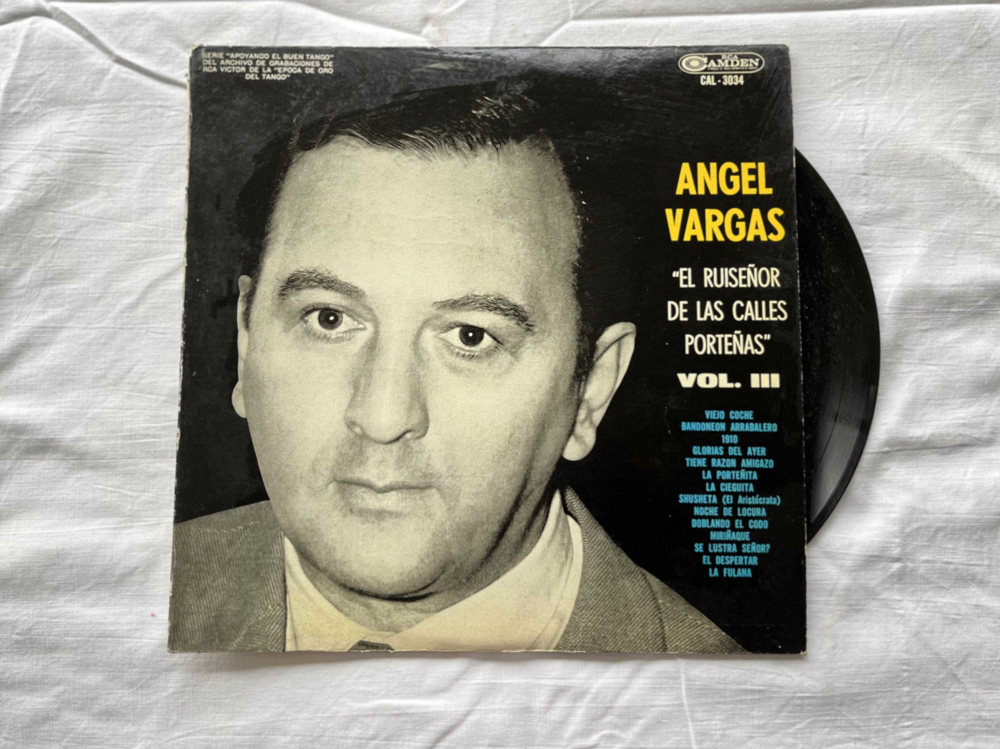 |  | Angel Vargas 1947 - 1953 | Angel Vargas | 1 - A Los Muchachos, 2 - Milonga Para Gardel, 3 - Color de Barro, 4 - Perdón Viejita, 5 - 1910, 6 - Tanto, 7 - La Mariposa, 8 - Del Buenos Aires de Ayer, 9 - Se Llamaba Eduardo Arolas, 10 - Quien Hubiera Dicho, 11 - Fondin de Pedro Mendoza, 12 - Amigazo, 13 - Apología Tanguera, 14 - Mi Vieja Viola, 15 - Cascabelito, 16 - Lucio Paredes, 17 - Milonga Que Viene Al Tranco, 18 - La Mentirosa, 19 - N.P (No Place), 20 - Chingolo | 2004 |
| | 15 Grandes Éxitos | Angel Vargas | 1 - Tres Esquinas, 2 - La Mariposa, 3 - Cualquier Cosa, 4 - Caricias, 5 - Milonga Para Gardel, 6 - A Pan Y Agua, 7 - Alma En Pena, 8 - El Morocho Y El Oriental, 9 - 1910, 10 - El Aristócrata, 11 - Copa De Ajenjo, 12 - El Porteñito, 13 - Ventanita De Arrabal, 14 - Cartas Viejas, 15 - Yo Soy De Parque Patricios | 2001 |
|  | No Aflojes | Angel Vargas | A1 - Muchacho, A2 - Naipe Marcado, A3 - Cualquier Cosa, A4 - La Mariposa, A5 - Ventanita De Arrabal, A6 - Duelo Criollo, B1 - No Aflojes, B2 - El Adios, B3 - A Pan Y Agua, B4 - Un Boliche, B5 - Rie Payaso, B6 - Si Es Muujer Ponele Rosa | 1978 |
|  | no encontrado | no encontrado | no encontrado | no encontrado |
|  | no encontrado | no encontrado | no encontrado | no encontrado |
|  | Epoca De Oro | Julio De Caro | A1 - El Monito, A2 - Mala Junta, A3 - Boedo, A4 - La Rayuela, A5 - Amurado, A6 - Flores Negras, A7 - Aromas, B1 - Tierra Querida, B2 - Derecho Viejo, B3 - Colombina, B4 - Sentencia, B5 - La Ultima Cita, B6 - Mala Pinta, B7 - Adios Pueblo | 0 |
|  | La Pesadilla | Jorge Luis Borges | A - La Pesadilla, B - La Pesadilla (Continuación) | 1978 |
 |  | no encontrado | no encontrado | no encontrado | no encontrado |
|  | no encontrado | no encontrado | no encontrado | no encontrado |
|  | The Rocky Horror Picture Show | "The Rocky Horror Picture Show" Original Cast | A1 - Science Fiction / Double Feature, A2 - Dammit Janet, A3 - Over At The Frankenstein Place, A4 - The Time Warp, A5 - Sweet Transvestite, A6 - I Can Make You A Man, A7 - Hot Patootie - Bless My Soul, A8 - I Can Make You A Man (Reprise), B1 - Touch-A, Touch-A, Touch Me, B2 - Eddie, - Rose Tint My World, B4 - I'm Going Home, B5 - Super Heroes, B6 - Science Fiction / Double Feature (Reprise) | 0 |
|  | Los Mejores Cuentos Vol.1 | Various | A1 - Garbancito, A2 - La Ratita Presumida, A3 - Peter Pan (1.ª Parte), B1 - Peter Pan (2.ª Parte), B2 - La Cigarra y la Hormiga, B3 - Blancanieves y Los Siete Enanitos | 1972 |
|  | Kaleidoscope | Siouxsie & The Banshees | A1 - Happy House, A2 - Tenant, A3 - Trophy, A4 - Hybrid, A5 - Clockface, A6 - Lunar Camel, B1 - Christine, B2 - Desert Kisses, B3 - Red Light, B4 - Paradise Place, B5 - Skin | 1980 |
| | Tema Otoñal / Adios Nonino | Aníbal Troilo Y Su Orquesta Típica | A - Tema Otoñal, B - Adios Nonino | 1968 |
|  | Che Buenos Aires | Aníbal Troilo Y Su Orquesta Típica | A1 - El Baqueano, A2 - Tallador, A3 - Entre Sueños, A4 - El Ultimo Farol, A5 - La Trilla, A6 - Milonga De La Parda, B1 - Che Buenos Aires, B2 - Pico Blanco, B3 - Naipe Marcado, B4 - La Milonga Y Yo, B5 - Mañanitas De Montmartre, B6 - Milonga Del Corralon | 0 |
| | Che Buenos Aires | Aníbal Troilo Y Su Orquesta Típica | A1 - El Baqueano, A2 - Tallador, A3 - Entre Sueños, A4 - El Ultimo Farol, A5 - La Trilla, A6 - Milonga De La Parda, B1 - Che Buenos Aires, B2 - Pico Blanco, B3 - Naipe Marcado, B4 - La Milonga Y Yo, B5 - Mañanitas De Montmartre, B6 - Milonga Del Corralon | 0 |
|  | Homenaje A Aníbal Troilo | Aníbal Troilo | A1 - Che Bandoneón, A2 - María, A3 - A Pedro Maffia, A4 - Pa' Que Bailen Los Muchachos, A5 - Naipe, A6 - Una Canción, B1 - Responso, B2 - Sur, B3 - Toda Mi Vida, B4 - Barrio de Tango, B5 - Garúa, B6 - Garras | 1977 |
|  | Estás... Sabrosa! | Los Blanco | A1 - Dame Cantinero , A2 - Mujer Divina , A3 - De La Boca Pa' Fuera , A4 - Cumbia De Mi Tierra , A5 - A Bailar Pachanga , A6 - Mezcla Blanco , B1 - A La Orilla Del Mar , B2 - Estoy Sabroso , B3 - Hoy Miré Tus Ojos , B4 - Piedras No Quiero , B5 - Siguiendo El Ritmo , B6 - Amor, Amor | 1974 |
| | Estás... Sabrosa! | Los Blanco | A1 - Dame Cantinero , A2 - Mujer Divina , A3 - De La Boca Pa' Fuera , A4 - Cumbia De Mi Tierra , A5 - A Bailar Pachanga , A6 - Mezcla Blanco , B1 - A La Orilla Del Mar , B2 - Estoy Sabroso , B3 - Hoy Miré Tus Ojos , B4 - Piedras No Quiero , B5 - Siguiendo El Ritmo , B6 - Amor, Amor | 1974 |
|  | Me Peina El Viento Los Cabellos | Las Voces Blancas | A1 - Me Peina El Viento Los Cabellos, B1 - Pasionaria | 0 |
|  | Entre Gauchos y Mariachis Vol.2 | Los Cantores Del Alba | 1A - El Que Toca Nunca Baila, 2A - La Noche del Brindis, 3A - Buenos Días Amor , 4A - Para mi Quiaca, 5A - No Me Toquen Este Vals, 6A - Mía esta tierra mía , 1B - Rancho Alegre, 2B - Me estás acabando, 3B - Vuela Paloma , 4B - La Calandria, 5B - Entre copa y copa, 6B - Ruega por nosotros | 1976 |
|  | no encontrado | no encontrado | no encontrado | no encontrado |
|  | no encontrado | no encontrado | no encontrado | no encontrado |
|  | no encontrado | no encontrado | no encontrado | no encontrado |
|  | A Collection Of Golden Hits | The Platters | A1 - The Great Pretender, A2 - Tell Me You're Mine, A3 - Why Do Fools Fall In Love, A4 - Angels In The Sky, A5 - From The Vine Came The Grape, A6 - Kokoma, B1 - Sh-Boom, B2 - The Magic Touch, B3 - The Church Bells May Ring, B4 - The Little Shoemaker, B5 - Only You, B6 - Love Love Love | 1957 |
.jpg) |  | Tangos | Xavier Cugat And His Orchestra | A - Jalousie, B - Tina, C - Inspiration = Inspiracion, D - Medias De Seda = Silk Stockings, E - La Cumparsita, F - Caminito = The Trail, G - Dusk (Rain In Spain), H - Gypsy Airs = Aires Gitanos | 1946 |
|  | Tango Mania | Sexteto Mayor | 1 - Quejas De Bandoneon, 2 - Uno , 3 - Mi Noche Triste, 4 - Taquito Militar, 5 - Adios Nonino, 6 - Rubias de New York, 7 - El Choclo, 8 - Nostalgias, 9 - La Yumba, 10 - Orgullo Criollo, 11 - La Puñalada, 12 - Cuesta Abajo | 1986 |
|  | Tangos, Milongas y Valses | Lalo Martel | A1 - Bajo Belgrano (Tango), A2 - Sos Bueno Vos También (Tango), A3 - Atenti Pebeta (Tango), A4 - Ilusión Azul (Vals), A5 - Pa' Que Te Voy A Contar (Milonga), A6 - Chorra (Tango), B1 - Giron Porteño (Milonga), B2 - Hoy Al Recordarla (Tango), B3 - Carro Viejo (Tango), B4 - La Mañana (Milonga), B5 - Esa Noche (Vals), B6 - Preparate Pa'l Domingo (Tango) | 1971 |
|  | no encontrado | no encontrado | no encontrado | no encontrado |
|  | Nostálgico | Osvaldo Piro | A1 - Tango Del Angel, A2 - Disonante, A3 - Manantial , A4 - Negroide, A5 - Dice Una Guitarra, A6 - Enamorado Estoy, B1 - Milonguero Triste, B2 - Nostálgico, B3 - La Bordona, B4 - Orlando Goñi , B5 - Mimi Pinzón, B6 - Por Unos Ojos Negros | 1970 |
|  | Con Alma De Tango | Alfredo de Angelis y Su Orquesta Típica | A1 - Pregonera, A2 - Con Alma de Tango, A3 - De Igual A Igual, A4 - Cuatro Lineas Para El Cielo, A5 - Melodía Gris, A6 - Ilusión Azul , B1 - Gloria, B2 - Rendido, B3 - Ya Estamos Iguales, B4 - Que Buena Es, B5 - Compadron, B6 - Por Quererte Te Perdí | 1966 |
| | Nostálgico | Osvaldo Piro | A1 - Tango Del Angel, A2 - Disonante, A3 - Manantial , A4 - Negroide, A5 - Dice Una Guitarra, A6 - Enamorado Estoy, B1 - Milonguero Triste, B2 - Nostálgico, B3 - La Bordona, B4 - Orlando Goñi , B5 - Mimi Pinzón, B6 - Por Unos Ojos Negros | 1970 |
|  | La Muerte Del Ángel | Buenos Aires 8 | A - La Muerte Del Ángel, B - Buenos Aires Hora Cero | 1970 |
|  | Otra Cita Con Los Angeles Negros | Los Angeles Negros | A1 - Si Las Flores Pudieran Hablar, A2 - Al Final De La Tarde, A3 - La Cita, A4 - Quisiera Ser Un Nino, A5 - Solo Amigos, A6 - Angelitos Negros, B1 - Quiera Dios, B2 - Balada De La Tristeza, B3 - Por Piedad, B4 - Cuento Los Dias, B5 - La Mentira (Se Te Olvida), B6 - Granada | 1972 |
|  | no encontrado | no encontrado | no encontrado | no encontrado |
|  | no encontrado | no encontrado | no encontrado | no encontrado |
|  | De Argentina | Cuarteto Cedron | A1 - Los Ladrones, A2 - Eché Veinte Centavos En La Ranura, A3 - A Lola Mora, A4 - Deseo Del Maya Artesano, A5 - La Casa Del Asiento De Tortuga, B1 - Balada Del Ahorcado Por Amor, B2 - Balada De La Mujer Con Poca Luz, B3 - El Oscuro Del Flores, B4 - Balada Del Ahorcadito, B5 - Balada Del Ex-Traficante De Diamantes | 1976 |
|  | Buenos Aires 8 | Buenos Aires 8 | A1 - Flores Negras, A2 - El Choclo, A3 - Responso, A4 - Mi Refujio, A5 - Melancolico, B1 - Taquito Militar, B2 - Ojos Negros, B3 - A Don Agustin Bardi, B4 - La Cachila, B5 - Quejas De Bandoneon | 1973 |
|  | no encontrado | no encontrado | no encontrado | no encontrado |
 |  | no encontrado | no encontrado | no encontrado | no encontrado |
|  | Tantas Vezes Fui À Guerra | Sérgio Godinho | A - Tantas Vezes Fui À Guerra, B - Não Te Deixes Assim Vestir | 1983 |
|  | La Mejor Música De Osvaldo Piro | Osvaldo Piro | A1 - La Bordona, A2 - Camandulaje, A3 - Que Me Van A Hablar De Amor, A4 - Negroide, A5 - Verano Porteño, A6 - Dominguera, B1 - Adios Nonino, B2 - Color Tango, B3 - Milonga Triste, B4 - Manantial, B5 - Azulnoche, B6 - Nostalgico | 1978 |
|  | no encontrado | no encontrado | no encontrado | no encontrado |
|  | no encontrado | no encontrado | no encontrado | no encontrado |
|  | Presentación Del Sexteto Tango | Sexteto Tango | A1 - La Bordona - Tango, A2 - Adiós Bardi - Tango, A3 - Quejas De Bandoneón - Tango, A4 - Sentimiento Gaucho - Tango, A5 - Milonga Del 900 - Milonga, A6 - Frente A Una Copa - Tango, B1 - N.N. - Tango, B2 - Danzarín - Tango, B3 - Quinto Año Nacional - Tango, B4 - Eso Es El Amor - Tango, B5 - Amurado - Tango, B6 - Una Canción - Tango | 0 |
|  | Quejas De Bandoneón | Sexteto Tango | A1 - La Bordona - Tango, A2 - Adiós Bardi - Tango, A3 - Quejas De Bandoneón - Tango, A4 - Sentimiento Gaucho - Tango, A5 - Milonga Del 900 - Milonga, A6 - Frente A Una Copa - Tango, B1 - N.N. - Tango, B2 - Danzarín - Tango, B3 - Quinto Año Nacional - Tango, B4 - Eso Es El Amor - Vals, B5 - Amurado - Tango, B6 - Una Canción - Tango | 0 |
|  | no encontrado | no encontrado | no encontrado | no encontrado |
|  | no encontrado | no encontrado | no encontrado | no encontrado |
|  | Ayer, Hoy y Siempre | Aníbal Troilo | A1 - El Marne, A2 - Que Risa, A3 - Taquito Militar, A4 - Cantor de mi Barrio, A5 - El Entrerriano, A6 - Vamos, Vamos Zaino Viejo, B1 - La Cumparsita, B2 - Viejo Baldio, B3 - Chique, B4 - Pero yo Se, B5 - La Bordona, B6 - Quejas Del Bandoneon | 0 |
|  | Añoranzas Por Mi Pago | Tránsito Cocomarola | A1 - Añoranzas, A2 - Imploracion, A3 - Brisas Correntinas, A4 - La Pareja, A5 - Por Tu Querer, A6 - Por Mi Pago, B1 - Idioma Guarani, B2 - Mi Anhelo, B3 - Marejada, B4 - La Yunta, B5 - Hija Del Campo, B6 - Angel Mio | 1977 |
|  | Pichuco E Sua Orquesta Tipica | Aníbal Troilo | 1 - La Cumparsita, 2 - El Africano, 3 - La Bordona, 4 - Rercordando A Discepolo, 5 - Adios Bardi, 6 - Verano Porteño, 7 - A Mis Viejos, 8 - Pa´Que Bailen Los Muchachos, 9 - Responso, 10 - Tinta Verde, 11 - El Marne, 12 - Los Mareados | 1975 |
| 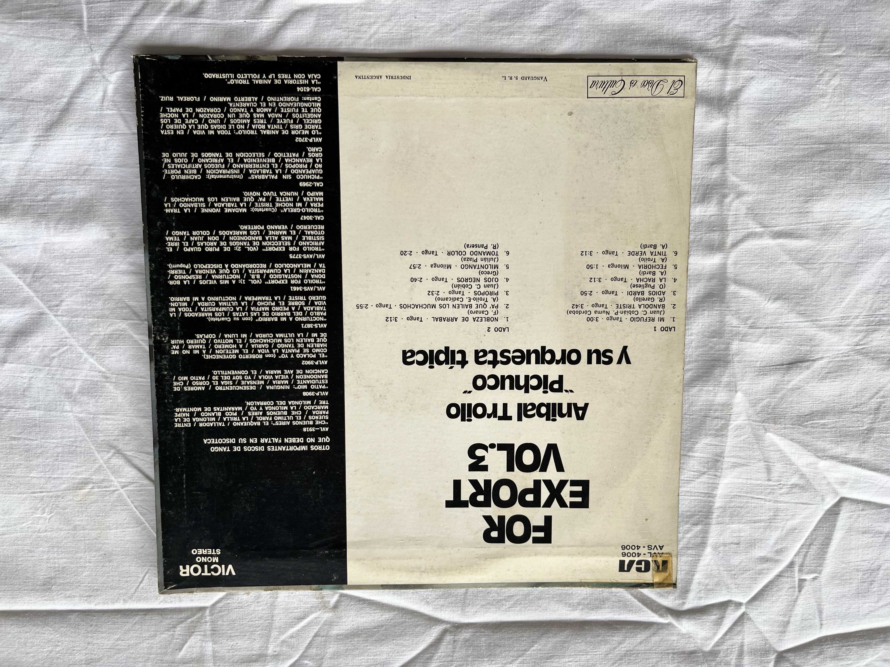 |  | no encontrado | no encontrado | no encontrado | no encontrado |
|  | Troilo For Export Vol.3 | Aníbal Troilo Y Su Orquesta Típica | A1 - Mi Refugio, A2 - Bandola Triste, A3 - Adios Bardi, A4 - La Racha, A5 - Fechoria, A6 - Tinta Verde, B1 - Nobleza De Arrabal, B2 - Pa´Que Bailen Los Muchachos, B3 - Piropos , B4 - Ojos Negros, B5 - Milotango, B6 - Tomando Color | 1974 |
| | Pichuco Y Sus Cantores | Pichuco | A1 - Pichuqueando, A2 - Ninguna, A3 - El Ultimo Guapo, A4 - Alma De Bohemio, A5 - El Conventillo, A6 - Sombras Nada Mas, B1 - San Pedro Y San Pablo, B2 - Tierrita, B3 - Frente Al Mar, B4 - Y A Mi, Que..., B5 - Compadrita Mia, B6 - Mensaje | 1974 |
|  | no encontrado | no encontrado | no encontrado | no encontrado |
|  | no encontrado | no encontrado | no encontrado | no encontrado |
|  | Lagrimas Y Sonrisas | Rodolfo Biagi Y Su Orquesta Típica | A1 - Mátala , A2 - Lagrimas Y Sonrisas , A3 - Quiero Verte Una Vez Más , A4 - Campo Afuera , A5 - Misa De Once , A6 - Pájaro Ciego , B1 - La Cumparsita , B2 - Loca De Amor , B3 - Zaraza, B4 - Sin Palabras , B5 - Tu Melodía , B6 - Griseta | 1974 |
|  | Cuando Mas Tranquila Te Alles / Palomita De Alas Blancas | Tony De La Rosa | A1 - El Libro De Los Dioses, A2 - Nos Vemos Mañana , A3 - Palomita De Alas Blancas, A4 - Cuando Mas Tranquila Te Alles, A5 - Carmela, B1 - Este Fue Mi Adios , B2 - De Mañana En Ocho Dias, B3 - El Pescado Nadador, B4 - El Chacaguite, B5 - Lorena | 1977 |
|  | Balada Para Un Loco | Astor Piazzolla | - Programa 1, A1 - Balada Para Un Loco, A2 - Se Potessi Ancora, - Programa 2, B1 - La Muralla De China, B2 - Balada Para Mi Muerte, - Programa 3, C1 - Ojos De Resaca, C2 - Chiquilín De Bachin, - Programa 4, D1 - Los Pájaros Perdidos, D2 - Las Islas | 1977 |
|  | "Balada Para Un Loco" | Astor Piazzolla | 1 - Balada Para Un Loco, 2 - Ojos De Resaca (Olhos De Ressaca), 3 - La Muralla De China, 4 - Los Pajaros Perdidos, 5 - Balada Para Mi Muerte, 6 - Se Potessi Ancora, 7 - Las Islas (As Ilhas), 8 - Chiquilin De Bachin, - Bonus Tracks, 9 - Pequeña Canción Para Matilde, 10 - Violetas Populares, 11 - Balada Para Mi Muerte (Playback), 12 - Balada Para Un Loco (Playback), 13 - Los Pajaros Perdidos (Playback) | 1999 |
| | "Balada Para Un Loco" | Astor Piazzolla | 1 - Balada Para Un Loco, 2 - Ojos De Resaca (Olhos De Ressaca), 3 - La Muralla De China, 4 - Los Pajaros Perdidos, 5 - Balada Para Mi Muerte, 6 - Se Potessi Ancora, 7 - Las Islas (As Ilhas), 8 - Chiquilin De Bachin, - Bonus Tracks, 9 - Pequeña Canción Para Matilde, 10 - Violetas Populares, 11 - Balada Para Mi Muerte (Playback), 12 - Balada Para Un Loco (Playback), 13 - Los Pajaros Perdidos (Playback) | 1999 |
|  | no encontrado | no encontrado | no encontrado | no encontrado |
|  | Libertango | Astor Piazzolla Y Su Conjunto 9 | 1 - Libertango, 2 - Amelitango, 3 - L'Evasion, 4 - Buenos Aires hora cero, 5 - Años de soledad, 6 - Los pájaros perdidos, 7 - Bandoneón, 8 - Zita, 9 - Adios nonino, 10 - Balada para mi muerte, 11 - Balada para un loco | 1994 |
|  | Adios Nonino | Astor Piazzolla Y Su Quinteto | 1 - Adiós Nonino, 2 - Otoño Porteño, 3 - Michelangelo 70, 4 - Coral, - Tangata (Silfo Y Ondina), - Música Instrumental De "Maria De Buenos Aires", 8 - Fuga Y Misterio, 9 - Contramilonga A la Funerala, 10 - Allegro Tangabile, 11 - Tocata Rea, 12 - Tangata Del Alba | 1999 |
| | Pichuco E Sua Orquesta Tipica | Aníbal Troilo | 1 - La Cumparsita, 2 - El Africano, 3 - La Bordona, 4 - Rercordando A Discepolo, 5 - Adios Bardi, 6 - Verano Porteño, 7 - A Mis Viejos, 8 - Pa´Que Bailen Los Muchachos, 9 - Responso, 10 - Tinta Verde, 11 - El Marne, 12 - Los Mareados | 1975 |
|  | no encontrado | no encontrado | no encontrado | no encontrado |
|  | Anibal Troilo "For Export" (Vol. II) | Aníbal Troilo Y Su Orquesta Típica | A1 - De Puro Guapo, A2 - El Africano, A3 - Seleccion De Tangos De Arolas, A4 - El Irresistible, A5 - Mas Alla... Bandoneon, A6 - Don Juan, B1 - Tema Otoñal, B2 - El Marne, B3 - Los Mareados, B4 - Color Tango, B5 - Recuerdo, B6 - Verano Porteño | 1967 |
|  | El Conventillo | Aníbal Troilo Y Su Orquesta Típica | A1 - Che Bandoneon, A2 - Los Cosos De Al Lao, A3 - Bailarin Compadrito, A4 - El Conventillo, A5 - Te Llaman Malevo, A6 - Yo Soy Del 30, A7 - Aqui Nomas, B1 - Vieja Viola, B2 - Ventanita De Arrabal, B3 - El Ultimo Guapo, B4 - Un Tango Para El Recuerdo, B5 - Las Carretas, B6 - Mi Viejo El Remendon, B7 - Dicha Pasada | 0 |
| | Tema Otoñal / Adios Nonino | Aníbal Troilo Y Su Orquesta Típica | A - Tema Otoñal, B - Adios Nonino | 1968 |
|  | Sotano Beat A Todo Color Con Alta Tension | Various | A1 - Co - Co, A2 - Tu Puedes Conseguirlo Si Realmente Quieres = You Can Get It If You Really Want, B1 - Estoy Hecho Un Demonio, B2 - Niña Felicidad | 0 |
|  | Primavera Con Alta Tensión | Various | A1 - Yo Quiero A Lola, A2 - Quiero Gritar Que Te Quiero, A3 - Dulce Viajera, A4 - Cuando Te Enamores, A5 - Caramelitos De Café, A6 - Una Noche Excepcional, A7 - Socorro (Ayúdame), B1 - Co-co, B2 - En Un Micro, B3 - Estoy Hecho Un Demonio, B4 - Sing Sing Barbara, B5 - Llevame Pa' Casa Mamá, B6 - Butterfly, B7 - 1-2-3 | 0 |
|  | Primavera Con Alta Tensión | Various | A1 - Yo Quiero A Lola, A2 - Quiero Gritar Que Te Quiero, A3 - Dulce Viajera, A4 - Cuando Te Enamores, A5 - Caramelitos De Café, A6 - Una Noche Excepcional, A7 - Socorro (Ayúdame), B1 - Co-co, B2 - Tu Sei Tu, B3 - Estoy Hecho Un Demonio, B4 - Sing Sing Barbara, B5 - Borriquito, B6 - Butterfly, B7 - 1-2-3 | 0 |
 |  | Primavera Con Alta Tensión | Various | A1 - Yo Quiero A Lola, A2 - Quiero Gritar Que Te Quiero, A3 - Dulce Viajera, A4 - Cuando Te Enamores, A5 - Caramelitos De Café, A6 - Una Noche Excepcional, A7 - Socorro (Ayudame), B1 - Co-co, B2 - Tu Sei Tu, B3 - Estoy Hecho Un Demonio, B4 - Sing Sing Barbara, B5 - Borriquito, B6 - Butterfly, B7 - 1-2-3 | 0 |
| | Primavera Con Alta Tensión | Various | A1 - Yo Quiero A Lola, A2 - Quiero Gritar Que Te Quiero, A3 - Dulce Viajera, A4 - Cuando Te Enamores, A5 - Caramelitos De Café, A6 - Una Noche Excepcional, A7 - Socorro (Ayudame), B1 - Co-co, B2 - Tu Sei Tu, B3 - Estoy Hecho Un Demonio, B4 - Sing Sing Barbara, B5 - Borriquito, B6 - Butterfly, B7 - 1-2-3 | 0 |
|  | Primavera Con Alta Tensión | Various | A1 - Yo Quiero A Lola, A2 - Quiero Gritar Que Te Quiero, A3 - Dulce Viajera, A4 - Cuando Te Enamores, A5 - Caramelitos de Café, A6 - Una Noche Excepcional, A7 - Socorro (Ayudame), B1 - Co-co, B2 - Tu Sei Tu, B3 - Estoy Hecho Un Demonio, B4 - Sing Sing Barbara, B5 - Llevame Pa' Casa Mamá, B6 - Butterfly, B7 - 1-2-3 | 0 |
|  | Bel Canto Stereophonic Demonstration Tape | Various | A - This Is Stereo (Stereophonic Tour Of The City Of Los Angeles), B1 - I'll Take Romance, B2 - You Stepped Out Of A Dream, B3 - Didn't It Rain, B4 - Fascination Rag, B5 - Frivolous Frappe, B6 - Oye Negra | 1959 |
|  | no encontrado | no encontrado | no encontrado | no encontrado |
| | Sotano Beat A Todo Color Con Alta Tension | Various | A1 - Co - Co, A2 - Tu Puedes Conseguirlo Si Realmente Quieres = You Can Get It If You Really Want, B1 - Estoy Hecho Un Demonio, B2 - Niña Felicidad | 0 |
|  | Música En Libertad Volumen 5 | Various | A1 - Itchy Koo Koo, A2 - Tiene De Todo, A3 - He Encontrado Mi Libertad, A4 - Loco Por Mi, A5 - Schwabadaba Ding Dong , A6 - Manuela Va Juntando Flores Y Sueños De Algodon, A7 - Oh Oh July, B1 - Sabado A la Mañana, Sabado A La Noche, B2 - Si Supieras, B3 - Vacaciones De Verano, B4 - Tema De Amor De "El Padrino" (Amor En Voz Baja), B5 - Penelope, B6 - Tantos Deseos De Di, B7 - Que La Dejen Ir Al Baile Sola | 1972 |
|  | Primavera Con Alta Tensión | Various | A1 - Yo Quiero A Lola, A2 - Quiero Gritar Que Te Quiero, A3 - Sweet Hitch Hicker = Dulce Viajera, A4 - Cuando Te Enamores, A5 - Coffee Toffee Squares = Caramelitos De Café, A6 - Una Noche Excepcional, A7 - Help, give me some help = Socorro (Ayúdame), B1 - Co Co, B2 - Tu sei tu = Tú eres tú, B3 - Estoy Hecho Un Demonio, B4 - Sing Sing Barbara, B5 - Llevame Pa' Casa Mamá, B6 - Butterfly, B7 - 1-2-3 | 1971 |
| | Primavera Con Alta Tensión | Various | A1 - Yo Quiero A Lola, A2 - Quiero Gritar Que Te Quiero, A3 - Dulce Viajera, A4 - Cuando Te Enamores, A5 - Caramelitos De Café, A6 - Una Noche Excepcional, A7 - Socorro (Ayúdame), B1 - Co-co, B2 - Tu Sei Tu, B3 - Estoy Hecho Un Demonio, B4 - Sing Sing Barbara, B5 - Borriquito, B6 - Butterfly, B7 - 1-2-3 | 0 |
|  | Recuerdos De La Nueva Ola | Various | A1 - Diana, A2 - Bienvenido Amor, A3 - Yo Que No Vivo Sin Tí, A4 - No Se Lo Que Hago, A5 - Pequeño Diablo, A6 - La Chica Mala, B1 - Oh Carol, B2 - Verguenza Y Escándalo En La Familia, B3 - La Novia, B4 - Pon Tu Cabeza En Mi Hombro, B5 - Vestida De Novia, B6 - Venecia Sin Tí | 0 |
|  | no encontrado | no encontrado | no encontrado | no encontrado |
|  | Phonograph 1. | Fonográf | A1 - A Szombat Esti Lány, A2 - Élsz Valahol, A3 - Társasjáték, A4 - Az Első Villamos, A5 - Valaki Vár, A6 - Nem Érti Senki, B1 - Szegény Kisfiú Panaszai, B2 - Fortuna Hálójában, B3 - Mondd, Hogy Nem Haragszol Rám, B4 - Oszkár Blues, B5 - Hét Évig Tart, B6 - Lökd Ide A Sört | 1974 |
| | Phonograph 1. | Fonográf | A1 - A Szombat Esti Lány, A2 - Élsz Valahol, A3 - Társasjáték, A4 - Az Első Villamos, A5 - Valaki Vár, A6 - Nem Érti Senki, B1 - Szegény Kisfiú Panaszai, B2 - Fortuna Hálójában, B3 - Mondd, Hogy Nem Haragszol Rám, B4 - Oszkár Blues, B5 - Hét Évig Tart, B6 - Lökd Ide A Sört | 1974 |
|  | Alta Tensión Es Primavera | Various | A1 - Palabras, Palabras = Parole, Parole, A2 - La Aventura, A3 - Es Mi Chica Favorita, A4 - Yo Te Quiero, Nos Queremos, A5 - Las Vegas, A6 - Detalles = Detalhes, A7 - Pochoclo = Popcorn, B1 - Que La Dejen Ir Al Baile Sola, B2 - Si Supieras, B3 - Esta Noche = Tonight, B4 - Por Culpa De Un Capricho, B5 - Descubrirás Que Yo Existo = You'll Notice Me, B6 - Papi No Te Irás De Mi = Daddy Don't You Walk So Fast, B7 - Tema De Amor De El Padrino = Love Theme From The Godfather | 1972 |
| 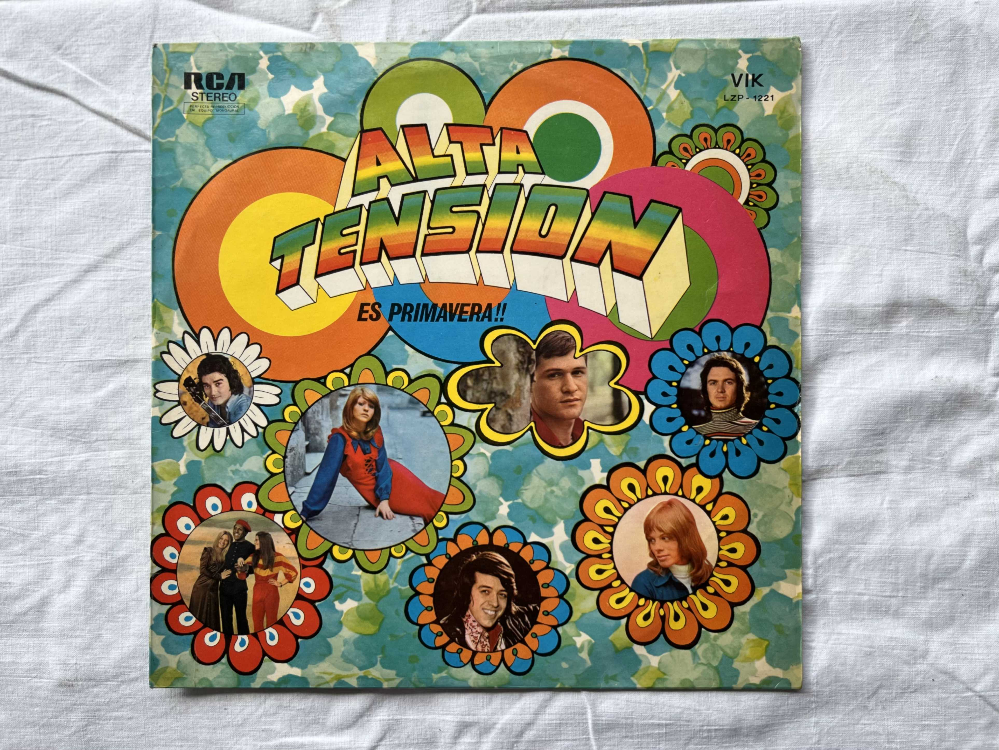 | | Primavera Con Alta Tensión | Various | A1 - Yo Quiero A Lola, A2 - Quiero Gritar Que Te Quiero, A3 - Dulce Viajera, A4 - Cuando Te Enamores, A5 - Caramelitos De Café, A6 - Una Noche Excepcional, A7 - Socorro (Ayúdame), B1 - Co-co, B2 - Tu Sei Tu, B3 - Estoy Hecho Un Demonio, B4 - Sing Sing Barbara, B5 - Borriquito, B6 - Butterfly, B7 - 1-2-3 | 0 |
| | Primavera Con Alta Tensión | Various | A1 - Yo Quiero A Lola, A2 - Quiero Gritar Que Te Quiero, A3 - Dulce Viajera, A4 - Cuando Te Enamores, A5 - Caramelitos De Café, A6 - Una Noche Excepcional, A7 - Socorro (Ayúdame), B1 - Co-co, B2 - Tu Sei Tu, B3 - Estoy Hecho Un Demonio, B4 - Sing Sing Barbara, B5 - Borriquito, B6 - Butterfly, B7 - 1-2-3 | 0 |
|  | Los Nenes Sicodélicos | El Gran Combo | A1 - La Mazucamba, A2 - Mozambique, A3 - El Habla Fino, A4 - No Tienes Corazón, A5 - Que Es Lo Tuyo, B1 - Gran Combo Jala-Jala, B2 - Sin Tu Querer, B3 - El Pollo Frizao', B4 - El Jibarito, B5 - Es Mi Tierra | 1968 |
|  | Vuelve El Sonido Agresivo | Los Yaki | A1 - Hair (Pelo), A2 - Cumpleaños (Birthday), A3 - La Niña Fresa, A4 - Dame Dame Cariño (Gimme Gimme Good Lovin), A5 - Murmullo (Hush), B1 - Ruleta De La Vida (Spinning Wheel), B2 - Merci (Alohuette), B3 - La Vida Facil, B4 - Bungalow Bill, B5 - Me Quedo En La Tierra | 0 |
| | Primavera Con Alta Tensión | Various | A1 - Yo Quiero A Lola, A2 - Quiero Gritar Que Te Quiero, A3 - Dulce Viajera, A4 - Cuando Te Enamores, A5 - Caramelitos De Café, A6 - Una Noche Excepcional, A7 - Socorro (Ayúdame), B1 - Co-co, B2 - En Un Micro, B3 - Estoy Hecho Un Demonio, B4 - Sing Sing Barbara, B5 - Llevame Pa' Casa Mamá, B6 - Butterfly, B7 - 1-2-3 | 0 |
| 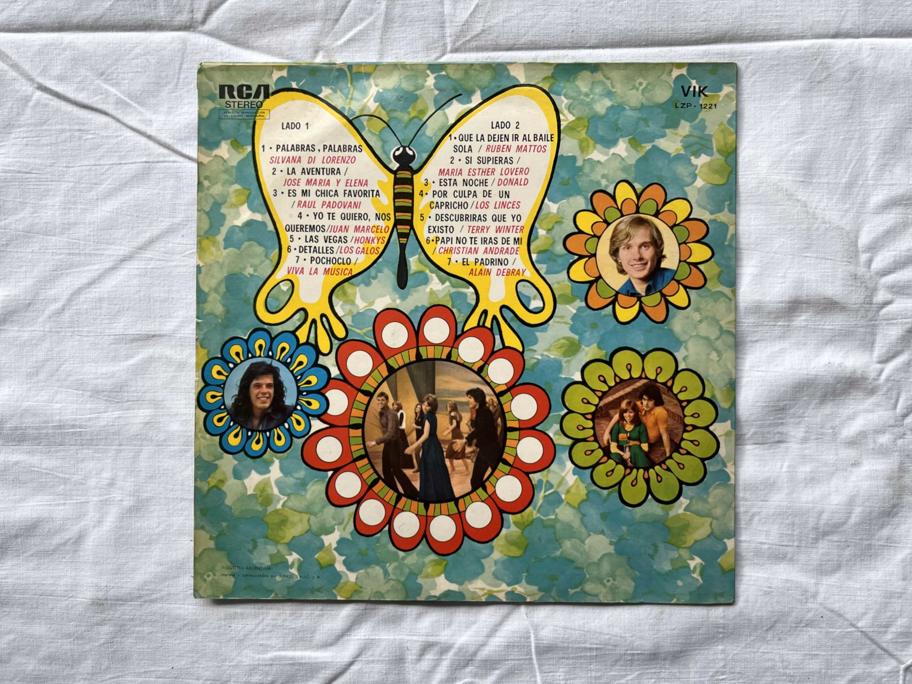 |  | Vuelve El Sonido Agresivo | Los Yaki | A1 - Pelo = Hair, A2 - Cumpleaños = Birthday, A3 - La Niña Fresa, A4 - Dame Dame Cariño = Gimme Gimme God Lovin, A5 - Murmullo, B1 - Ruleta de la Vida = Spinning Wheel, B2 - Merci = Alouhette, B3 - La Vida Fácil, B4 - Bungalow Bill, B5 - Me Quedo En La Tierra | 1969 |
| | Primavera Con Alta Tensión | Various | A1 - Yo Quiero A Lola, A2 - Quiero Gritar Que Te Quiero, A3 - Dulce Viajera, A4 - Cuando Te Enamores, A5 - Caramelitos De Café, A6 - Una Noche Excepcional, A7 - Socorro (Ayúdame), B1 - Co-co, B2 - Tu Sei Tu, B3 - Estoy Hecho Un Demonio, B4 - Sing Sing Barbara, B5 - Borriquito, B6 - Butterfly, B7 - 1-2-3 | 0 |
| | Alta Tensión Es Primavera | Various | A1 - Palabras, Palabras = Parole, Parole, A2 - La Aventura, A3 - Es Mi Chica Favorita, A4 - Yo Te Quiero, Nos Queremos, A5 - Las Vegas, A6 - Detalles = Detalhes, A7 - Pochoclo = Popcorn, B1 - Que La Dejen Ir Al Baile Sola, B2 - Si Supieras, B3 - Esta Noche = Tonight, B4 - Por Culpa De Un Capricho, B5 - Descubrirás Que Yo Existo = You'll Notice Me, B6 - Papi No Te Irás De Mi = Daddy Don't You Walk So Fast, B7 - Tema De Amor De El Padrino = Love Theme From The Godfather | 1972 |
|  | Super Éxitos De Juan Gabriel Con Rocío Dúrcal | Rocío Dúrcal | A1 - Lágrimas Y Lluvia, A2 - Me Gusta Estar Contigo, A3 - La Muerte Del Palomo, A4 - Ya No Insistas Corazón, A5 - Tu Abandono, B1 - Se Me Olvidó Otra Vez, B2 - Ases Y Tercia De Reyes, B3 - Ya No Vuelvo A Molestarte, B4 - Siempre Estoy Pensando En Ti, B5 - Te Voy A Olvidar | 1979 |
|  | Eu Não Posso Viver Sem Você (Gonna Get Along Without You Now) | Filomena | A - Eu Não Posso Viver Sem Você (Gonna Get Along Without You Now), B - Porque Você Foi Judiar De Mim, Meu Amor | 1980 |
 | | Super Éxitos De Juan Gabriel Con Rocío Dúrcal | Rocío Dúrcal | A1 - Lágrimas Y Lluvia, A2 - Me Gusta Estar Contigo, A3 - La Muerte Del Palomo, A4 - Ya No Insistas Corazón, A5 - Tu Abandono, B1 - Se Me Olvidó Otra Vez, B2 - Ases Y Tercia De Reyes, B3 - Ya No Vuelvo A Molestarte, B4 - Siempre Estoy Pensando En Ti, B5 - Te Voy A Olvidar | 1979 |
|  | Canta A Juan Gabriel Volumen 3 | Rocío Dúrcal | A1 - Cuando Yo Quiera Has De Volver, A2 - Gracias Amor Por Tanto Amor, A3 - No Lastimes Mas, A4 - Tercia De Ases, A5 - Te Voy A Olvidar, B1 - Me Nace Del Corazon, B2 - Nuevamente Sola, B3 - Nadie Es Como Tu, B4 - Me Gusta Estar Contigo, B5 - Te Voy A Hacer Feliz | 1979 |
|  | Super Éxitos De Juan Gabriel Con Rocío Dúrcal | Rocío Dúrcal | A1 - Lágrimas Y Lluvia, A2 - Me Gusta Estar Contigo, A3 - La Muerte Del Palomo, A4 - Ya No Insistas Corazón, A5 - Tu Abandono, B1 - Se Me Olvidó Otra Vez, B2 - Ases Y Tercia De Reyes, B3 - Ya No Vuelvo A Molestarte, B4 - Siempre Estoy Pensando En Ti, B5 - Te Voy A Olvidar | 1979 |
|  | Festival De Exitos Vol. XII En Voltops | Various | A1 - La Montaña (A Montanha), A2 - Si Pienso En Nuestras Canciones (La Nostra Canzone), A3 - Amarte Es Mi Castigo, A4 - Vete, A5 - Uno De Tantos (Uno, Nessuno), A6 - Concierto Para Un Verano (Concerto Pour Un Été), B1 - Un Gran Amor Y Nada Mas (Un Grande Amore E Niente Piú), B2 - Fuimos Igual Que Los Demas, B3 - La Vida Pasa Felizmente, B4 - Tu Y Yo En El Mas Alla (Nosotros Dos En El Mundo Y En El Alma) (Noi Due Nel Mondo E Nell'anima), B5 - Quiero Dar Mi Corazon, B6 - Tu Me Haces Falta | 0 |
| | Festival De Exitos Vol. XII En Voltops | Various | A1 - La Montaña (A Montanha), A2 - Si Pienso En Nuestras Canciones (La Nostra Canzone), A3 - Amarte Es Mi Castigo, A4 - Vete, A5 - Uno De Tantos (Uno, Nessuno), A6 - Concierto Para Un Verano (Concerto Pour Un Été), B1 - Un Gran Amor Y Nada Mas (Un Grande Amore E Niente Piú), B2 - Fuimos Igual Que Los Demas, B3 - La Vida Pasa Felizmente, B4 - Tu Y Yo En El Mas Alla (Nosotros Dos En El Mundo Y En El Alma) (Noi Due Nel Mondo E Nell'anima), B5 - Quiero Dar Mi Corazon, B6 - Tu Me Haces Falta | 0 |
|  | Festival De Exitos En Voltops Vol. XI | Various | A1 - Porque Te Quiero Tanto, A2 - Razones, A3 - Pequeño Hombre, A4 - Ah! Que Hermosa Es, A5 - Con Ella En Motoneta, A6 - Son Cosas De Ti, B1 - Me Juego Entero Por Tu Amor, B2 - Por Amor, B3 - Pensamiento, B4 - Dama Dama, B5 - Tres Palabras, B6 - Has Regresado Viejo Amigo | 0 |
| | Festival De Exitos Vol. XII En Voltops | Various | A1 - La Montaña (A Montanha), A2 - Si Pienso En Nuestras Canciones (La Nostra Canzone), A3 - Amarte Es Mi Castigo, A4 - Vete, A5 - Uno De Tantos (Uno, Nessuno), A6 - Concierto Para Un Verano (Concerto Pour Un Été), B1 - Un Gran Amor Y Nada Mas (Un Grande Amore E Niente Piú), B2 - Fuimos Igual Que Los Demas, B3 - La Vida Pasa Felizmente, B4 - Tu Y Yo En El Mas Alla (Nosotros Dos En El Mundo Y En El Alma) (Noi Due Nel Mondo E Nell'anima), B5 - Quiero Dar Mi Corazon, B6 - Tu Me Haces Falta | 0 |
| | Festival De Exitos Vol. XII En Voltops | Various | A1 - La Montaña (A Montanha), A2 - Si Pienso En Nuestras Canciones (La Nostra Canzone), A3 - Amarte Es Mi Castigo, A4 - Vete, A5 - Uno De Tantos (Uno, Nessuno), A6 - Concierto Para Un Verano (Concerto Pour Un Été), B1 - Un Gran Amor Y Nada Mas (Un Grande Amore E Niente Piú), B2 - Fuimos Igual Que Los Demas, B3 - La Vida Pasa Felizmente, B4 - Tu Y Yo En El Mas Alla (Nosotros Dos En El Mundo Y En El Alma) (Noi Due Nel Mondo E Nell'anima), B5 - Quiero Dar Mi Corazon, B6 - Tu Me Haces Falta | 0 |
|  | Los Mas Grandes Exitos De Roberto Yanes - Coleccion Musica De Oro | Roberto Yanes | A1 - Pequeña Flor, A2 - Escribeme, A3 - Vete De Mi, A4 - La Montaña, A5 - Desesperadamente, A6 - Oyelo Bien, B1 - Lagrimas Del Alma, B2 - Nuestro Concierto, B3 - Escandalo, B4 - De Quien Estas Enamorada, B5 - Donde Estara Mi Vida, B6 - Cuatro Palabras | 1965 |
| | Los Mas Grandes Exitos De Roberto Yanes - Coleccion Musica De Oro | Roberto Yanes | A1 - Pequeña Flor, A2 - Escribeme, A3 - Vete De Mi, A4 - La Montaña, A5 - Desesperadamente, A6 - Oyelo Bien, B1 - Lagrimas Del Alma, B2 - Nuestro Concierto, B3 - Escandalo, B4 - De Quien Estas Enamorada, B5 - Donde Estara Mi Vida, B6 - Cuatro Palabras | 1965 |
|  | El Ultimo Acto | Roberto Yanes | A1 - El Ultimo Acto, A2 - Que Facil, A3 - Estoy celoso, A4 - Muriendome De Amor, A5 - Dicha Pasada, A6 - Todo Es Amor, B1 - La Forma, B2 - Preciosa, B3 - Esperare, B4 - Cuando Caen Las Hojas, B5 - Algo Facil De Olvidar, B6 - Hablemos Con Dios | 1969 |
| | El Ultimo Acto | Roberto Yanes | A1 - El Ultimo Acto, A2 - Que Facil, A3 - Estoy celoso, A4 - Muriendome De Amor, A5 - Dicha Pasada, A6 - Todo Es Amor, B1 - La Forma, B2 - Preciosa, B3 - Esperare, B4 - Cuando Caen Las Hojas, B5 - Algo Facil De Olvidar, B6 - Hablemos Con Dios | 1969 |
.jpg) |  | Grandes Éxitos De Bárbara Y Dick | Barbara & Dick | A1 - Ámame... Me Gusta Amanecer , A2 - Respirando , A3 - Volvamos Juntos A Aquel Lugar , A4 - Yo Pescador Del Amor , A5 - Malaika , A6 - Cuando Estábamos , B1 - Adiós Se Va , B2 - Juana , B3 - Yo Vendo Unos Ojos Negros , B4 - Nuestra Casa Siempre Huele A Rosas , B5 - Cuando El Amor Se Realiza , B6 - Brilla El Sol | 0 |
|  | Los Éxitos de Abracadabra | Abracadabra (5) | A1 - Hoy Te Doy La Mitad De Lo Que Soy, A2 - Un Lugar, Un Café... Y El Humo De Un Cigarrillo, A3 - Yo Me Voy... Tú Te Vas, A4 - Marisa De Mi Vida, A5 - Cuando Llegaste Susana, A6 - Júrame, B1 - Chau Cariño Chau, B2 - Perderás, B3 - Recuerda, B4 - Son Tantas Noches, B5 - Luna de Xelajú, B6 - A La Huella Huellita | 1988 |
|  | Traigo Un Amor | Los Hermanos Arriagada | A1 - Donde Estas Corazon, A2 - Peleas = Brigas, A3 - Amémonos, A4 - El Buen Camino, A5 - Voy A Rifar Mi Corazón, B1 - Traigo Un Amor, B2 - Río Manso, B3 - El Tiempo Que Te Quede Libre, B4 - Una Cruz, B5 - A Orillas Del Papalopan, B6 - Más Que Yo | 1974 |
|  | Grupo Comanche | Comanche (10) | A1 - Desafío, A2 - Una Limosna, A3 - Por Seguir Tus Huellas, A4 - Ella Se Marcho , A5 - Te Digo Adiós, B1 - Usted, B2 - Perdón, B3 - No Me Quieras Tanto, B4 - No Quiero Que Te Vayas, B5 - Dijimos Amar | 0 |
|  | A Bossa de Geraldo Cunha | Geraldo Cunha | A1 - Menininha Rua Augusta, A2 - Não Me Diga Adeus, B1 - Diplomacia, B2 - Rancho das Namoradas | 0 |
| | A Bossa de Geraldo Cunha | Geraldo Cunha | A1 - Menininha Rua Augusta, A2 - Não Me Diga Adeus, B1 - Diplomacia, B2 - Rancho das Namoradas | 0 |
|  | Hace Una Larga Angustia... | Roberto Vicario | A1 - Piel De Fosforo, A2 - Hace Una Larga Angustia Que No Estamos Juntos, A3 - Simplemente Te Quiero Porque..., A4 - Una Tarde De Otoño, A5 - Las Furias Del Verano, A6 - Tal Vez No Tuvimos Tiempo, B1 - Biografia De Una Soledad, B2 - Identificación, B3 - Cuando Tu No Estas..., B4 - Estoy Aprendiendo A Olvidarte, B5 - Es Amor De Verano, B6 - Esta Sensación De Que Todo Es Cristal | 1970 |
|  | no encontrado | no encontrado | no encontrado | no encontrado |
|  | no encontrado | no encontrado | no encontrado | no encontrado |
|  | no encontrado | no encontrado | no encontrado | no encontrado |
|  | no encontrado | no encontrado | no encontrado | no encontrado |
|  | You're The One That I Want / Summer Nights (Martian Remix) | John Travolta | 1 - You're The One That I Want (Martian Remix), 2 - Summer Nights (Martian Remix) | 1998 |
| | You're The One That I Want / Summer Nights (Martian Remix) | John Travolta | 1 - You're The One That I Want (Martian Remix), 2 - Summer Nights (Martian Remix) | 1998 |
|  | Esso | The Esso Trinidad Steel Band | A1 - Apeman, A2 - If You Let Me Make Love To You Then Why Can't I Touch You?, A3 - Ride On Sammy, A4 - Simple Calypso, A5 - Cecilia, A6 - I Want You Back, B1 - Sabre Dance, B2 - Come To The Sunshine, B3 - Erasmus B. Black, B4 - If I Had The Wings (Like A Dove), B5 - Singer Man, B6 - Aquarium | 1971 |
| 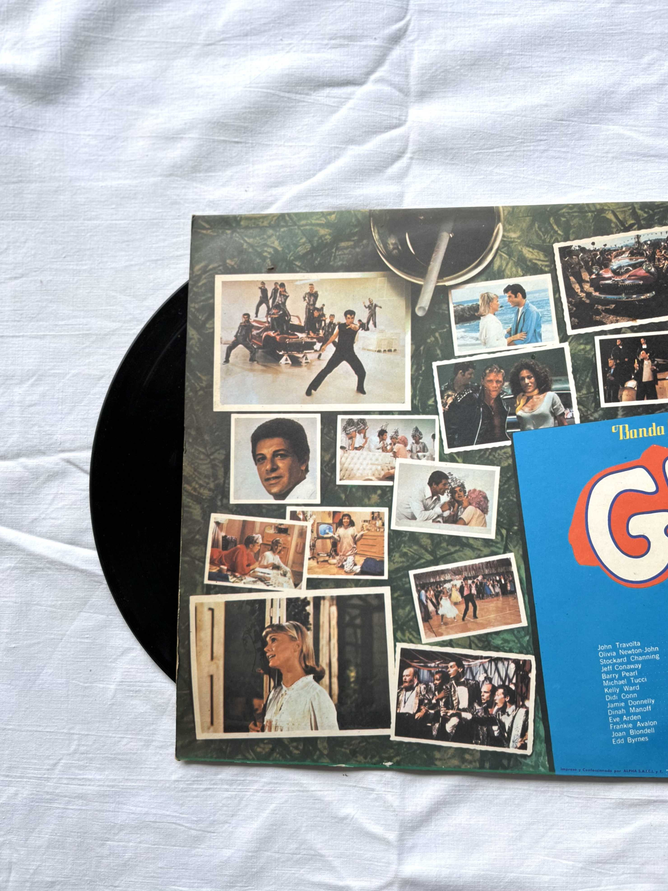 |  | Vol. 3° | Alfio Lombardi | A1 - Buon Natale Amore, A2 - Una Magnifica Serata, A3 - Pareva Na Santa, A4 - Chianu Chianu, A5 - Immagine, B1 - Chitarra Mia, B2 - Ultimo Incontro, B3 - Avvicinati, B4 - Amicizia, B5 - Quanta Buscie | 0 |
.jpg) | | Esso | The Esso Trinidad Steel Band | A1 - Apeman, A2 - If You Let Me Make Love To You Then Why Can't I Touch You?, A3 - Ride On Sammy, A4 - Simple Calypso, A5 - Cecilia, A6 - I Want You Back, B1 - Sabre Dance, B2 - Come To The Sunshine, B3 - Erasmus B. Black, B4 - If I Had The Wings (Like A Dove), B5 - Singer Man, B6 - Aquarium | 1971 |
|  | Musica Original De La Pelicula Girls Just Want To Have Fun | Various | A1 - (Come On) Shout (Anda Y Grita), A2 - On The Loose (Desatada), A3 - I Can Fly (Puedo Volar), A4 - Dancing In Heaven (Orbital Be-Bop) (Bailando En El Cielo), A5 - Girls Just Want To Have Fun (Las Chicas Solo Quieren Divertirse), B1 - Dancing In The Street (Bailando En La Calle), B2 - Too Cruel (Muy Cruel), B3 - Technique (Tecnica), B4 - Wake Up The Neighborhood (Despierta Al Vecindario) | 1985 |
|  | no encontrado | no encontrado | no encontrado | no encontrado |
|  | Musica De La Pelicula Grease | The Starland Night Band | A1 - You're The One That I Want, A2 - Summer Night, A3 - I'm Sandra Dee, A4 - Greased Lighter, A5 - Hoplesty Devoted, A6 - Love Is A Splendored Thing (Instrumental), B1 - Grease, B2 - We Go Together, B3 - Rock'n Roll, B4 - Beauty School Drama, B5 - These Are Worse Things I Could Do, B6 - Sandy | 1978 |
.jpg) |  | no encontrado | no encontrado | no encontrado | no encontrado |
|  | no encontrado | no encontrado | no encontrado | no encontrado |
|  | no encontrado | no encontrado | no encontrado | no encontrado |
|  | no encontrado | no encontrado | no encontrado | no encontrado |
|  | no encontrado | no encontrado | no encontrado | no encontrado |
|  | no encontrado | no encontrado | no encontrado | no encontrado |
|  | I Started A Joke | Bee Gees | A1 - Started A Joke, A2 - Indian Gin And Whisky Dry, B1 - Idea, B2 - When The Swallows Fly | 1968 |
| | I Started A Joke | Bee Gees | A1 - Started A Joke, A2 - Indian Gin And Whisky Dry, B1 - Idea, B2 - When The Swallows Fly | 1968 |
|  | Mi Bella Lola | Vicentico Alvarez Y Su Salsa | A1 - Mi Bella Lola, A2 - La Guaracha Del Salon, A3 - Buena Noche, A4 - Cadete Constitucional, A5 - Guaguanco De Los Violentos, B1 - Geniosa, B2 - A Buscar Mi Amor, B3 - Voy Bien Camilo, B4 - El Negro Jose, B5 - Alborada | 1979 |
|  | El Club Del Clan Vol. 2 | Various | A1 - El Twist Del Recluta, A2 - Pera Madura, A3 - Necesito Tu Amor Esta Noche, A4 - La Pollera Colorá, A5 - Polichinela Twist, A6 - Salsa, B1 - Sola Solita, B2 - Adios, Mundo Cruel, B3 - Sóplame Un Beso, B4 - Cerca De Un Angel, B5 - Filosofito, B6 - El Día Mas Largo Del Siglo | 1962 |
|  | Discografía Básica: Un Buen Momento / Coliseum / Usar Y Tirar | M-Clan | - Un Buen Momento (1995), 1.1 - Se Calienta, 1.2 - En mis Manos, 1.3 - Un Buen Momento, 1.4 - Volando Alto, 1.5 - Miro Atrás, 1.6 - Dentro de la Esfera, 1.7 - Perdido en la Ciudad, 1.8 - Hermana, 1.9 - Donde el Río Hierve, 1.10 - No Sabes Hacerlo Bien, 1.11 - Ron Vudú, 1.12 - Como una Piedra, 1.13 - Hasta Cuando, - Coliseum (1997), 2.1 - Deja que lo Muerda, 2.2 - Nacional 120, 2.3 - Maxi ha Vuelto, 2.4 - ¿Dónde Está la Revolución?, 2.5 - Desde los Tejados, 2.6 - Vuelve, 2.7 - Recuerdo, 2.8 - Canción sin Retorno, 2.9 - Algo más Fuerte, 2.10 - Cierto Sabor Amargo, 2.11 - Tarde, 2.12 - Si Estoy tan Loco, 2.13 - Domingo de Mayo, - Usar Y Tirar (1999), 3.1 - Chilaba y Cachimba, 3.2 - Llamando a la Tierra, 3.3 - Quédate a Dormir, 3.4 - No Quiero Verte, 3.5 - La Calma, 3.6 - No tan Bueno, 3.7 - Eres Funky, 3.8 - Usar y Tirar, 3.9 - Mujer Norteña, 3.10 - Setenta y Nueve, 3.11 - Despierta, 3.12 - 39 Grados | 2002 |
|  | Quanta Llana | Tipuaixí | 1 - Ford Capri, 2 - Frac, 3 - La Muntanya, 4 - No Se Cumplia, 5 - Topalante, 6 - Geriatrik Park, 7 - El Nen, 8 - La Señal, 9 - Portada Del Caso, 10 - Por, 11 - Posesión, 12 - Perturbat, 13 - Mataró Connection, 14 - Xinito, 15 - Abuela, 16 - 200 Grams, 17 - Pko Mix | 1998 |
 | | El Club Del Clan Vol. 2 | Various | A1 - El Twist Del Recluta, A2 - Pera Madura, A3 - Necesito Tu Amor Esta Noche, A4 - La Pollera Colorá, A5 - Polichinela Twist, A6 - Salsa, B1 - Sola Solita, B2 - Adios, Mundo Cruel, B3 - Sóplame Un Beso, B4 - Cerca De Un Angel, B5 - Filosofito, B6 - El Día Mas Largo Del Siglo | 1962 |
| | El Club Del Clan Vol. 2 | Various | A1 - El Twist Del Recluta, A2 - Pera Madura, A3 - Necesito Tu Amor Esta Noche, A4 - La Pollera Colorá, A5 - Polichinela Twist, A6 - Salsa, B1 - Sola Solita, B2 - Adios, Mundo Cruel, B3 - Sóplame Un Beso, B4 - Cerca De Un Angel, B5 - Filosofito, B6 - El Día Mas Largo Del Siglo | 1962 |
|  | Adios Sui Géneris, Parte 1ra | Sui Generis (4) | A1 - Instituciones, A2 - La Fuga Del Paralítico, A3 - Natalio Ruiz, El Hombrecito Del Sombrero Gris, B1 - Confesiones De Invierno, B2 - Canción Para Mi Muerte, B3 - La Niña Juega En El Gran Jardín, B4 - Zapando Con La Gente, B5 - Aprendizaje | 1975 |
|  | Three Dog Night Special D.J. Copy | Three Dog Night | - Side 1 STUDIO RECORDING, A1 - Shambala, A2 - An Old Fashioned Love Song, A3 - Mama Told Me, A4 - Let Me Serenade You, A5 - Cowboy, A6 - Easy To Be Hard, A7 - Happy Song , A8 - Never Been to Spain, A9 - Celebrate, - Side 2 LIVE RECORDING, B1 - Black and White, B2 - One, B3 - Joy To The World, B4 - One Man Band, B5 - The Family Of Man, B6 - Liar, B7 - Eli's Coming, B8 - Out In The Country, B9 - Good Feelin' 1957 | 1974 |
| 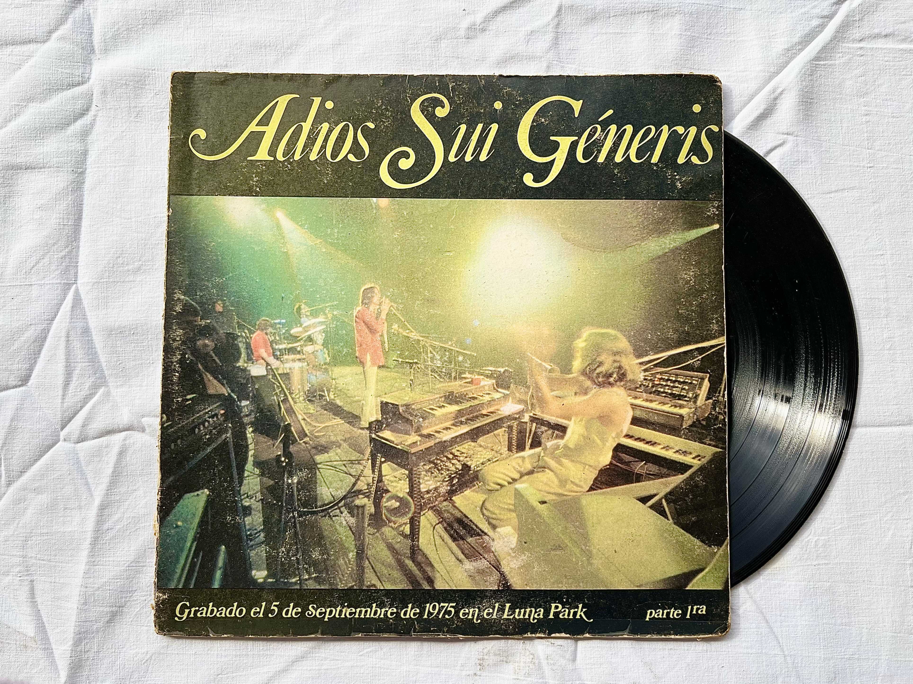 |  | Adios Sui Géneris | Sui Generis (4) | CD1-1 - Instituciones, CD1-2 - La Fuga Del Paralítico / Natalio Ruiz El Hombrecito Del Sombrero Gris, CD1-3 - Confesiones De Invierno, CD1-4 - Cancion Para Mi Muerte, CD1-5 - Introduccion (Parte Hablada), CD1-6 - La Niña Juega En El Gran Jardin, CD1-7 - Zapando Con La Gente, CD1-8 - Aprendizaje, CD2-1 - Un Hada Un Cisne, CD2-2 - Pequeñas Delicias De La Vida Conyugal, CD2-3 - Tango En Segunda, CD2-4 - Rasguña Las Piedras, CD2-5 - Blues Del Levante | 1992 |
| | Adios Sui Géneris | Sui Generis (4) | CD1-1 - Instituciones, CD1-2 - La Fuga Del Paralítico / Natalio Ruiz El Hombrecito Del Sombrero Gris, CD1-3 - Confesiones De Invierno, CD1-4 - Cancion Para Mi Muerte, CD1-5 - Introduccion (Parte Hablada), CD1-6 - La Niña Juega En El Gran Jardin, CD1-7 - Zapando Con La Gente, CD1-8 - Aprendizaje, CD2-1 - Un Hada Un Cisne, CD2-2 - Pequeñas Delicias De La Vida Conyugal, CD2-3 - Tango En Segunda, CD2-4 - Rasguña Las Piedras, CD2-5 - Blues Del Levante | 1992 |
| | Three Dog Night Special D.J. Copy | Three Dog Night | - Side 1 STUDIO RECORDING, A1 - Shambala, A2 - An Old Fashioned Love Song, A3 - Mama Told Me, A4 - Let Me Serenade You, A5 - Cowboy, A6 - Easy To Be Hard, A7 - Happy Song , A8 - Never Been to Spain, A9 - Celebrate, - Side 2 LIVE RECORDING, B1 - Black and White, B2 - One, B3 - Joy To The World, B4 - One Man Band, B5 - The Family Of Man, B6 - Liar, B7 - Eli's Coming, B8 - Out In The Country, B9 - Good Feelin' 1957 | 1974 |
|  | Trafalgar | Bee Gees | 1 - How Can You Mend A Broken Heart, 2 - Israel, 3 - The Greatest Man In The World, 4 - It's Just The Way, 5 - Remembering, 6 - Somebody Stop The Music, 7 - Trafalgar, 8 - Don't Wanna Live Inside Myself, 9 - When I Do, 10 - Dearest, 11 - Lion In Winter, 12 - Walking Back To Waterloo | 0 |
|  | Trafalgar | Bee Gees | A1 - Trafalgar, A2 - Remembering, A3 - When I Do, A4 - Dearest, A5 - Lion In Winter, A6 - Walking Back To Waterloo, B1 - How Can You Mend A Broken Heart, B2 - Israel, B3 - The Greatest Man In The World, B4 - It's Just The Way, B5 - Don't Wanna Live Inside Myself, B6 - Somebody Stopped The Music | 0 |
| 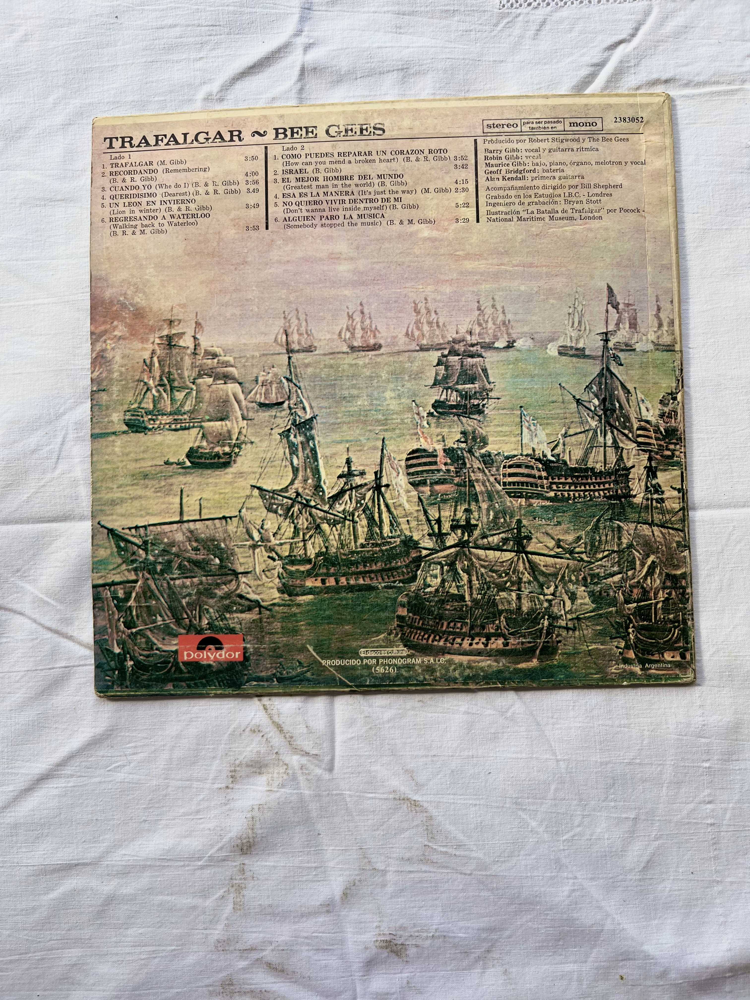 |  | Trafalgar | Bee Gees | A1 - How Can You Mend A Broken Heart, A2 - Israel, A3 - The Greatest Man In The World, A4 - It's Just The Way, A5 - Remembering, A6 - Somebody Stop The Music, B1 - Trafalgar, B2 - Don't Wanna Live Inside Myself, B3 - When Do I, B4 - Dearest, B5 - Lion In Winter, B6 - Walking Back To Waterloo | 1971 |
|  | Trafalgar | Bee Gees | A1 - How Can You Mend A Broken Heart, A2 - Israel, A3 - The Greatest Man In The World, A4 - It's Just The Way, A5 - Remembering, A6 - Somebody Stop The Music, B1 - Trafalgar, B2 - Don't Wanna Live Inside Myself, B3 - When Do I, B4 - Dearest, B5 - Lion In Winter, B6 - Walking Back To Waterloo | 1971 |
|  | Trafalgar | Bee Gees | A1 - How Can You Mend A Broken Heart, A2 - Israel, A3 - The Greatest Man In The World, A4 - It's Just The Way, A5 - Remembering, A6 - Somebody Stop The Music, B1 - Trafalgar, B2 - Don't Wanna Live Inside Myself, B3 - When Do I, B4 - Dearest, B5 - Lion In Winter, B6 - Walking Back To Waterloo | 1996 |
|  | Foot In Mouth Disease | Gob (3) | A1 - Lemon-Aid, A2 - I've Been Up These Steps, A3 - Oh! Ellin, A4 - I Cut Myself, Too, A5 - Fed Up, A6 - Ming Tran, B1 - When Life Gets Boring, B2 - Give Up The Grudge, B3 - Bones, B4 - This Evil World, B5 - Bully, B6 - Cold Feet, B7 - Everybody's Getting Hooked Up | 2023 |
|  | Hail To The Teeth: The Jimmy Carter Comedy Album | The Harris Brothers | A1 - Hail To The Teeth!, A2 - Greet The Press, A3 - Hot Line, A4 - A Walk In The Rose Garden, A5 - Party-Line, A6 - Call To N.A.S.A., A7 - What Price Glory?, A8 - White House Tour, A9 - Mexican President, A10 - Day After Tomorrow Show, B1 - A New Image, B2 - Later On The Tour, B3 - You Tell The Truth, B4 - French Chef, B5 - Solid South, B6 - A Night At The Opera, B7 - Reorganization, B8 - Landing In Plains, B9 - Still Later On The Tour, B10 - Lust But Not Least | 1977 |
|  | Exclusively For Disc Jockey | Various | A1 - Le Jardin Imaginaire, A2 - Romantica, A3 - California Sunday Morning, A4 - Go, A5 - Ghetto Child, B1 - Can't Get Enough Of Your Love, B2 - Rock Your Baby, B3 - All Right Now, B4 - Clapping Song, B5 - Groovy | 1975 |
|  | O "Soul" Mio | Toni Cavana And The Fabs | A1 - Sweet Soul Music, A2 - Knock On Wood, A3 - Autumn Sound, A4 - In The Midnight Hour, A5 - My Girl, A6 - Soul Man, A7 - Funky Broadway, B1 - What Is Soul, B2 - It's A Wonder, B3 - Soul Beat, B4 - Keep Lookin', B5 - Hold On, I'm Coming, B6 - Warm And Tender Love, B7 - Eddleboom | 1968 |
| | O "Soul" Mio | Toni Cavana And The Fabs | A1 - Sweet Soul Music, A2 - Knock On Wood, A3 - Autumn Sound, A4 - In The Midnight Hour, A5 - My Girl, A6 - Soul Man, A7 - Funky Broadway, B1 - What Is Soul, B2 - It's A Wonder, B3 - Soul Beat, B4 - Keep Lookin', B5 - Hold On, I'm Coming, B6 - Warm And Tender Love, B7 - Eddleboom | 1968 |
|  | Música Nova Do Brasil | Sérgio Assad | - Ponteio e Tocatina, - Verdades, - Suíte Quadrada, - Repentes, B10 - Divagações Poéticas | 1985 |
|  | Noches De Copas | Jossie Esteban Y La Patrulla 15 | A1 - Noche De Copas, A2 - El Coco, A3 - Dame Un Beso, A4 - Colorá, B1 - Hace Mucho Tiempo, B2 - La Caballá (Todos Los Años Pasan), B3 - Pelú, B4 - Necescito Verte | 1986 |
|  | Un Muchacho Como Yo | Palito Ortega | A1 - Un Muchacho Como Yo, A2 - ¿Estas Sola Esta Noche? (Are You Lonesome Tonight), A3 - Digan Lo Que Digan, A4 - Perdonen La Tristeza, A5 - Adios Amada, A6 - La Felicidad, B1 - Mejor Me Voy, B2 - Sueño Diurno, B3 - Quien Tiene La Culpa, B4 - Seleccion Flamenca, a) - Paresito Faraón, b) - La Hija De Don Juan Alba, c) - Castillito De Arena, B5 - Tu Recuerdo, B6 - Yo No Se Que Me Han Hecho Tus Ojos | 1967 |
|  | no encontrado | no encontrado | no encontrado | no encontrado |
|  | Le Colonne Sonore Di Guido E Maurizio De Angelis | Guido And Maurizio De Angelis | A1 - Sandokan, A2 - Sweet Lady Blue (Orchestrale), A3 - Tema Di Majorana, A4 - Il Marsigliese, A5 - Napoli Oggi, A6 - Tema Di Carolis, B1 - Verde, B2 - Song, B3 - Delitto Di Regime, B4 - Tema D'Amore, B5 - Tema Di Giovanna, B6 - W S. Eusebio | 1976 |
|  | Wind On The Water | Crosby & Nash | A1 - Carry Me, A2 - Mama Lion, A3 - Bittersweet, A4 - Take The Money And Run, A5 - Naked In The Rain, A6 - Love Work Out, B1 - Low Down Payment, B2 - Cowboy Of Dreams, B3 - Homeward Through The Haze, B4 - Fieldworker, - To The Last Whale... | 1975 |
|  | Plays Solo | Peter Sprague | 1 - Secret Code, 2 - It's You Or No One, 3 - Luiza, 4 - With A Little Help From My Friends, 5 - Letter From Home, 6 - Satellite, 7 - Nocturne Opus 9, Number 2, 8 - Passarim, 9 - In Her Family, 10 - A Foggy Day, 11 - She's Leaving Home, 12 - Papaya Samba | 2008 |
|  | Hell Or High Water | Tinsley Ellis | 1 - Hell Or High Water, 2 - Hooked, 3 - Mystery To Me, 4 - Love Comes Knockin', 5 - Stuck In Love, 6 - Real Bad Way, 7 - All Rumors Are True, 8 - All I Can Do, 9 - Love Me By Phone, 10 - Feelin' No Pain, 11 - Ten Year Day, 12 - Set Love Free | 2002 |
 |  | Medo da Chuva | Raul Seixas | A1 - Medo da Chuva, A2 - Sociedade Alternativa, B1 - Como Vovó Já Dizia, B2 - O Trem das Sete | 1975 |
|  | Parchis Contra El Hombre Invisible (Banda Sonora Original De La Película) | Parchis | 1 - La Magia Del Circo, 2 - Animales, 3 - Ratatata, 4 - Hola, Amigos, 5 - Cinco Amigos De Verdad, 6 - La Batalla De Los Planetas, 7 - Parchis (La Canción De...), 8 - Una Casita En Canada, 9 - Don Diablo, 10 - Tu Nombre | 2007 |
| | Parchis Contra El Hombre Invisible (Banda Sonora Original De La Película) | Parchis | 1 - La Magia Del Circo, 2 - Animales, 3 - Ratatata, 4 - Hola, Amigos, 5 - Cinco Amigos De Verdad, 6 - La Batalla De Los Planetas, 7 - Parchis (La Canción De...), 8 - Una Casita En Canada, 9 - Don Diablo, 10 - Tu Nombre | 2007 |
| | Parchis Contra El Hombre Invisible (Banda Sonora Original De La Película) | Parchis | 1 - La Magia Del Circo, 2 - Animales, 3 - Ratatata, 4 - Hola, Amigos, 5 - Cinco Amigos De Verdad, 6 - La Batalla De Los Planetas, 7 - Parchis (La Canción De...), 8 - Una Casita En Canada, 9 - Don Diablo, 10 - Tu Nombre | 2007 |
|  | La Magia Del Circo | Parchis | A1 - La Magia Del Circo, A2 - Un Rayo De Sol, A3 - Dime Por Que, A4 - Vamos A Bailar Un Twist, A5 - Canta Y Baila, B1 - Me Vas A Volver Loco -Making Your Mind Up-, B2 - Corazón De Plomo, B3 - El Baile De Los Pajaritos, B4 - El Pais De La Musica, B5 - Cumpleaños Feliz | 0 |
| | La Magia Del Circo | Parchis | A1 - La Magia Del Circo, A2 - Un Rayo De Sol, A3 - Dime Por Que, A4 - Vamos A Bailar Un Twist, A5 - Canta Y Baila, B1 - Me Vas A Volver Loco -Making Your Mind Up-, B2 - Corazón De Plomo, B3 - El Baile De Los Pajaritos, B4 - El Pais De La Musica, B5 - Cumpleaños Feliz | 0 |
|  | Geffery Morgan... | UB40 | 1 - The Pillow , 2 - Seasons, 3 - You're Not An Army, 4 - Your Eyes Were Open, 5 - If It Happens Again , 6 - Riddle Me, 7 - I'm Not Fooled So Easily , 8 - As Always You Were Wrong Again , 9 - D.U.S | 1984 |
|  | I Got You Babe | UB40 | A - I Got You Babe, B - Nkomo A Go Go (Specially Remixed Version) | 1985 |
|  | no encontrado | no encontrado | no encontrado | no encontrado |
| 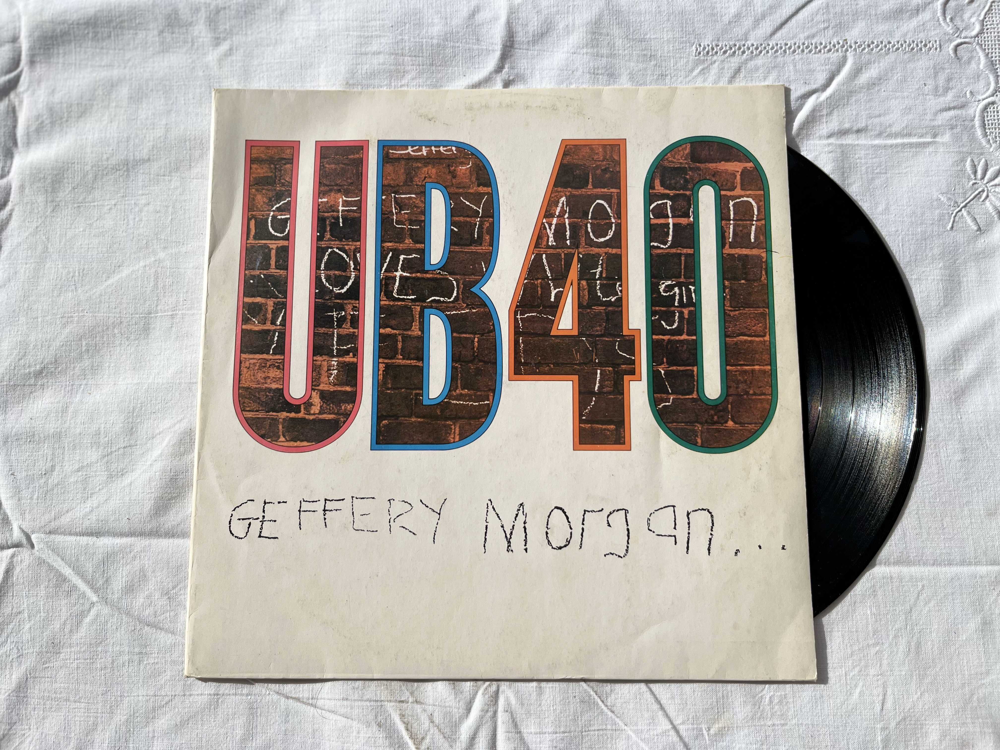 | | Geffery Morgan... | UB40 | 1 - The Pillow , 2 - Seasons, 3 - You're Not An Army, 4 - Your Eyes Were Open, 5 - If It Happens Again , 6 - Riddle Me, 7 - I'm Not Fooled So Easily , 8 - As Always You Were Wrong Again , 9 - D.U.S | 1984 |
|  | Abracadabra | Abracadabra (5) | A1 - Chau Cariño Chau, A2 - Marisa De Mi Vida, A3 - Un Lugar, Un Café... Y El Humo De Un Cigarrillo, A4 - Yo Me Voy... Tú Te Vas, A5 - Cuando Llegaste Susana, A6 - Júrame, B1 - Luna De Schelaju, B2 - Son Tantas Noches, B3 - Perderás, B4 - Huela (A La Huella Huellita), B5 - Recuerda, B6 - Hoy Te Doy La Mitad De Lo Que Soy | 0 |
|  | Que Era Lo Que No Llevaba? | Rafael Mancebo y Su Combo | A1 - Que Era Lo Que No Llevaba, A2 - No Presto Mi Mujer, A3 - Verguenza, A4 - Preparen Candela, A5 - Fat Back, A6 - Mi Silencia, B1 - El Medio Millon, B2 - Imposible, B3 - Que Buena La Vida, B4 - El Mambo De Ayer, B5 - Llueve, B6 - El Megrito Parrandero | 1965 |
| | Los Éxitos de Abracadabra | Abracadabra (5) | A1 - Hoy Te Doy La Mitad De Lo Que Soy, A2 - Un Lugar, Un Café... Y El Humo De Un Cigarrillo, A3 - Yo Me Voy... Tú Te Vas, A4 - Marisa De Mi Vida, A5 - Cuando Llegaste Susana, A6 - Júrame, B1 - Chau Cariño Chau, B2 - Perderás, B3 - Recuerda, B4 - Son Tantas Noches, B5 - Luna de Xelajú, B6 - A La Huella Huellita | 1988 |
|  | Atrevidísimo | Tito Chicoma Y Su Orquesta | A1 - No Es Casualidad / Sueño Contigo / Que Maravilla Fue Sentirte, A2 - Nuestro Sueño / Desesperado / Sonambulo, A3 - Despues De Hacer El Amor / Caradura / Amiga De Que, B1 - Hagamoslo / Amame En Camara Lenta / Poquita Fe, B2 - Despues De Ti Que / Hazme Olvidarla / Nuestro Amor Es Perfecto, B3 - Todo Me Huele A Ti / Que No Se Rompa / La Noche / Si Supieras | 1988 |
|  | Música Poderosa Vol. 11 | Various | A1 - Gorrion, A2 - Dama de Plata, A3 - Abismo, A4 - Llamarada, A5 - Novela Policial, A6 - El Amor Es Libre, B1 - Si Quieres Puedes Dar la Vuelta, B2 - Dama Triste, B3 - Sera Que Nuestro Amor de Termino, B4 - Linda Bella Linda, B5 - Me Muero Por Mirarte, B6 - Nadie Mas Que Yo | 1978 |
|  | Con Aroma De Mujer | Patricia Teherán | A1 - Tarde Lo Conocí, A2 - Amor De Papel, A3 - Eres Todo De Mí, A4 - Enamorada De Mí, A5 - Acaso No Me Crees, B1 - Toda Daría Por Ti, B2 - Siempre Conmigo, B3 - Volví A Fallar, B4 - Dueño De Mi Pasión, B5 - Endúlzame La Vida | 1994 |
| | Música Poderosa Vol. 11 | Various | A1 - Gorrion, A2 - Dama de Plata, A3 - Abismo, A4 - Llamarada, A5 - Novela Policial, A6 - El Amor Es Libre, B1 - Si Quieres Puedes Dar la Vuelta, B2 - Dama Triste, B3 - Sera Que Nuestro Amor de Termino, B4 - Linda Bella Linda, B5 - Me Muero Por Mirarte, B6 - Nadie Mas Que Yo | 1978 |
| | Música Poderosa Vol. 11 | Various | A1 - Gorrion, A2 - Dama de Plata, A3 - Abismo, A4 - Llamarada, A5 - Novela Policial, A6 - El Amor Es Libre, B1 - Si Quieres Puedes Dar la Vuelta, B2 - Dama Triste, B3 - Sera Que Nuestro Amor de Termino, B4 - Linda Bella Linda, B5 - Me Muero Por Mirarte, B6 - Nadie Mas Que Yo | 1978 |
|  | Argentina Canta Asi | Various | A1 - Tabacalera, A2 - Vidala Para El Ultimo Dia, A3 - Las Quimeras, A4 - Nostalgias Tucumanas, A5 - Luche Y Luche, A6 - Indiecito Dormido, B1 - Si Se Calla El Cantor, B2 - El Viento Tiene Una Pena, B3 - Lluvia Y Soledad, B4 - Triunfo Agrario, B5 - Urpilita Mensajera, B6 - A Un Hachero Santiagueño | 1972 |
 |  | Volveremos A Encontrarnos / Me Voy | Cecilia (12) | A - Volveremos A Encontrarnos, B - Me Voy | 1973 |
| 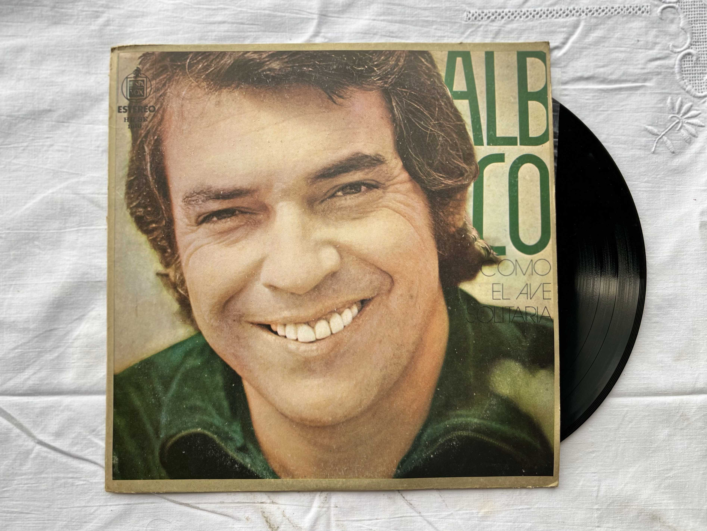 |  | Lo Mejor De Alberto Cortez | Alberto Cortez | A1 - No Soy De Aquí, A2 - El Abuelo, A3 - Sombras, A4 - Las Palmeras, A5 - Mi Arbol Y Yo, B1 - En Un Rincón Del Alma, B2 - Los Ejes De Mi Carreta, B3 - Pobre Mi Patrón, B4 - Distancia, B5 - Manolo | 1983 |
|  | no encontrado | no encontrado | no encontrado | no encontrado |
|  | no encontrado | no encontrado | no encontrado | no encontrado |
|  | Baila Conmigo | Mister Sam | A1 - Introducción - Punto De Reunión (That's The Joint), A2 - Baila Conmigo (Baila Comigo), A3 - Festival De Amor (Love Festival), A4 - Toma Esa Decision (Make That Move), A5 - Hay Que Divertirse (Feel Good, Party TIme), A6 - No Puedo Fingir El Amor (Can't Fake The Feeling), B1 - Introducción - Octava Maravilla (Eighth Wonder), B2 - Santa Maria, B3 - Más Y Más Y Más (On And On And On), B4 - Cuando Estoy Contigo (When I'm With You), B5 - Extraño (Strange) | 1981 |
|  | Voulez-Vous | ABBA | A1 - As Good As New, A2 - Voulez-Vous, A3 - I Have A Dream, A4 - Angeleyes, A5 - The King Has Lost His Crown, B1 - Does Your Mother Know, B2 - If It Wasn't For The Nights, B3 - Chiquitita, B4 - Lovers (Live A Little Longer), B5 - Kisses Of Fire | 1979 |
|  | no encontrado | no encontrado | no encontrado | no encontrado |
| | Voulez-Vous | ABBA | A1 - As Good As New, A2 - Voulez-Vous, A3 - I Have A Dream, A4 - Angeleyes, A5 - The King Has Lost His Crown, B1 - Does Your Mother Know, B2 - If It Wasn't For The Nights, B3 - Chiquitita, B4 - Lovers (Live A Little Longer), B5 - Kisses Of Fire | 1979 |
 |  | no encontrado | no encontrado | no encontrado | no encontrado |
 |  | no encontrado | no encontrado | no encontrado | no encontrado |
|  | no encontrado | no encontrado | no encontrado | no encontrado |
|  | no encontrado | no encontrado | no encontrado | no encontrado |
|  | no encontrado | no encontrado | no encontrado | no encontrado |
|  | Voulez-Vous | ABBA | A1 - As Good As New, A2 - Voulez-Vous, A3 - I Have A Dream, A4 - Angeleyes, A5 - The King Has Lost His Crown, B1 - Does Your Mother Know, B2 - If It Wasn't For The Nights, B3 - Chiquitita, B4 - Lovers (Live A Little Longer), B5 - Kisses Of Fire | 1979 |
 |  | no encontrado | no encontrado | no encontrado | no encontrado |
|  | Gracias Por La Musica | ABBA | CD-1 - Gracias Por La Música = Thank You For The Music, CD-2 - Reina Danzante = Dancing Queen, CD-3 - Al Andar = Move On, CD-4 - ¡Dame! ¡Dame! ¡Dame! = Gimme! Gimme! Gimme! (A Man After Midnight), CD-5 - Fernando, CD-6 - Estoy Soñando = I Have A Dream, CD-7 - Mamma Mía, CD-8 - Hasta Mañana, CD-9 - Conociéndome, Conociéndote = Knowing Me, Knowing You, CD-10 - Chiquitita, - Bonus Tracks, CD-11 - Ring Ring, CD-12 - Andante, Andante, CD-13 - Felicidad = Happy New Year, CD-14 - No Hay A Quien Culpar = When All Is Said And Done, CD-15 - Se Me Está Escapando = Slipping Through My Fingers, - -, DVD-1 - Chiquitita (300 Millones, TVE), DVD-2 - Chiquitita (Aplauso, TVE), DVD-3 - Estoy Soñando (Promo Clip), - ABBA On Spanish TV (Especial Aplauso 100, TVE), DVD-4.1 - Conociéndome, Conociéndote (Promo Clip), DVD-4.2 - Gracias Por La Música (Promo Clip), DVD-4.3 - ¡Dame! ¡Dame! ¡Dame!, - -, DVD-5 - Felicidad (Promo Clip), DVD-6 - No Hay A Quien Culpar (Promo Clip), DVD-7 - International Sleeve Gallery | 2014 |
|  | Voulez-Vous | ABBA | CD-1 - As Good As New, CD-2 - Voulez-Vous, CD-3 - I Have A Dream, CD-4 - Angeleyes, CD-5 - The King Has Lost His Crown, CD-6 - Does Your Mother Know, CD-7 - If It Wasn't For The Nights, CD-8 - Chiquitita, CD-9 - Lovers (Live A Little Longer), CD-10 - Kisses Of Fire, - Bonus Tracks, CD-11 - Summer Night City (Full Length Version), CD-12 - Lovelight, CD-13 - Gimme! Gimme! Gimme! (A Man After Midnight), CD-14 - Dream World, CD-15 - Voulez-Vous (Extended Remix, 1979 US Promo), - ABBA In Switzerland (Television Special, BBC), DVD-1.1 - Untitled, DVD-1.2 - Take A Chance On Me, DVD-1.3 - The King Has Lost His Crown, DVD-1.4 - The Name Of The Game, DVD-1.5 - Mamma Mia, DVD-1.6 - Hole In Your Soul, DVD-1.7 - Kisses Of Fire, DVD-1.8 - Lovers (Live A Little Longer), DVD-1.9 - Chiquitita, DVD-1.10 - Does Your Mother Know, DVD-1.11 - Thank You For The Music, - -, DVD-2 - Chiquitita (Music For Unicef), DVD-3 - I Have A Dream (Extended Promo), DVD-4 - If It Wasn't For The Nights (Mike Yarwood Christmas Show, BBC), DVD-5 - Chiquitita (Christmas Snowtime Special, BBC), DVD-6 - Björn & Benny Interview (Multi-Coloured Swap Shop, BBC), DVD-7 - Greatest Hits Vol. 2 Television Commercial I, DVD-8 - Greatest Hits Vol. 2 Television Commercial II, DVD-9 - International Sleeve Gallery | 0 |
|  | Voulez-Vous | ABBA | 1 - As Good As New, 2 - Voulez-Vous, 3 - I Have A Dream, 4 - Angeleyes, 5 - The King Has Lost His Crown, 6 - Does Your Mother Know, 7 - If It Wasn't For The Nights, 8 - Chiquitita, 9 - Lovers (Live A Little Longer), 10 - Kisses Of Fire, - Bonus Tracks:, 11 - Summer Night City, 12 - Lovelight, 13 - Gimme! Gimme! Gimme! (A Man After Midnight) | 0 |
| | Voulez-Vous | ABBA | 1 - As Good As New, 2 - Voulez-Vous, 3 - I Have A Dream, 4 - Angeleyes, 5 - The King Has Lost His Crown, 6 - Does Your Mother Know, 7 - If It Wasn't For The Nights, 8 - Chiquitita, 9 - Lovers (Live A Little Longer), 10 - Kisses Of Fire, - Bonus Tracks:, 11 - Summer Night City, 12 - Lovelight, 13 - Gimme! Gimme! Gimme! (A Man After Midnight) | 0 |
|  | Voulez-Vous | ABBA | A1 - As Good As New, A2 - Voulez-Vous, A3 - I Have A Dream, A4 - Angeleyes, A5 - The Kings Has Lost His Crown, B1 - Does Your Mother Know, B2 - If It Wasn't For The Nights, B3 - Chiquitita, B4 - Lovers (Live A Little Longer), B5 - Kisses Of Fire | 1979 |
|  | Voulez-Vous | ABBA | CD-1 - As Good As New, CD-2 - Voulez-Vous, CD-3 - I Have A Dream, CD-4 - Angeleyes, CD-5 - The King Has Lost His Crown, CD-6 - Does Your Mother Know, CD-7 - If It Wasn't For The Nights, CD-8 - Chiquitita, CD-9 - Lovers (Live A Little Longer), CD-10 - Kisses Of Fire, - Bonus Tracks, CD-11 - Summer Night City (Full Length Version), CD-12 - Lovelight, CD-13 - Gimme! Gimme! Gimme! (A Man After Midnight), CD-14 - Dream World, CD-15 - Voulez-Vous (Extended Remix, 1979 US Promo), - ABBA In Switzerland (Television Special, BBC), DVD-1.1 - Take A Chance On Me, DVD-1.2 - The King Has Lost His Crown, DVD-1.3 - The Name Of The Game, DVD-1.4 - Mamma Mia, DVD-1.5 - Hole In Your Soul, DVD-1.6 - Kisses Of Fire, DVD-1.7 - Lovers (Live A Little Longer), DVD-1.8 - Chiquitita, DVD-1.9 - Does Your Mother Know, DVD-1.10 - Thank You For The Music, - -, DVD-2 - Chiquitita (Music For Unicef), DVD-3 - I Have A Dream (Extended Promo), DVD-4 - If It Wasn't For The Nights (Mike Yarwood Christmas Show, BBC), DVD-5 - Chiquitita (Christmas Snowtime Special, BBC), DVD-6 - Björn & Benny Interview (Multi-Coloured Swap Shop, BBC), DVD-7 - Greatest Hits Vol. 2 Television Commercial I, DVD-8 - Greatest Hits Vol. 2 Television Commercial II, DVD-9 - International Sleeve Gallery | 2013 |
| | Voulez-Vous | ABBA | 1 - As Good As New, 2 - Voulez-Vous, 3 - I Have A Dream, 4 - Angeleyes, 5 - The King Has Lost His Crown, 6 - Does Your Mother Know, 7 - If It Wasn't For The Nights, 8 - Chiquitita, 9 - Lovers (Live A Little Longer), 10 - Kisses Of Fire, - Bonus Tracks:, 11 - Summer Night City, 12 - Lovelight, 13 - Gimme! Gimme! Gimme! (A Man After Midnight) | 0 |
|  | Voulez-vous | ABBA | A1 - As Good As New, A2 - Voulez-vous, A3 - I Have A Dream, A4 - Angeleyes, A5 - Kisses Of Fire, B1 - Does Your Mother Know, B2 - If It Wasn't For The Nights, B3 - Chiquitita, B4 - Lovers (Live A Little Longer), B5 - The King Has Lost His Crown | 1979 |
| | Voulez-Vous | ABBA | CD-1 - As Good As New, CD-2 - Voulez-Vous, CD-3 - I Have A Dream, CD-4 - Angeleyes, CD-5 - The King Has Lost His Crown, CD-6 - Does Your Mother Know, CD-7 - If It Wasn't For The Nights, CD-8 - Chiquitita, CD-9 - Lovers (Live A Little Longer), CD-10 - Kisses Of Fire, - Bonus Tracks, CD-11 - Summer Night City (Full Length Version), CD-12 - Lovelight, CD-13 - Gimme! Gimme! Gimme! (A Man After Midnight), CD-14 - Dream World, CD-15 - Voulez-Vous (Extended Remix, 1979 US Promo), - ABBA In Switzerland (Television Special, BBC), DVD-1.1 - Take A Chance On Me, DVD-1.2 - The King Has Lost His Crown, DVD-1.3 - The Name Of The Game, DVD-1.4 - Mamma Mia, DVD-1.5 - Hole In Your Soul, DVD-1.6 - Kisses Of Fire, DVD-1.7 - Lovers (Live A Little Longer), DVD-1.8 - Chiquitita, DVD-1.9 - Does Your Mother Know, DVD-1.10 - Thank You For The Music, - -, DVD-2 - Chiquitita (Music For Unicef), DVD-3 - I Have A Dream (Extended Promo), DVD-4 - If It Wasn't For The Nights (Mike Yarwood Christmas Show, BBC), DVD-5 - Chiquitita (Christmas Snowtime Special, BBC), DVD-6 - Björn & Benny Interview (Multi-Coloured Swap Shop, BBC), DVD-7 - Greatest Hits Vol. 2 Television Commercial I, DVD-8 - Greatest Hits Vol. 2 Television Commercial II, DVD-9 - International Sleeve Gallery | 2013 |
| | Voulez-Vous | ABBA | CD-1 - As Good As New, CD-2 - Voulez-Vous, CD-3 - I Have A Dream, CD-4 - Angeleyes, CD-5 - The King Has Lost His Crown, CD-6 - Does Your Mother Know, CD-7 - If It Wasn't For The Nights, CD-8 - Chiquitita, CD-9 - Lovers (Live A Little Longer), CD-10 - Kisses Of Fire, - Bonus Tracks, CD-11 - Summer Night City (Full Length Version), CD-12 - Lovelight, CD-13 - Gimme! Gimme! Gimme! (A Man After Midnight), CD-14 - Dream World, CD-15 - Voulez-Vous (Extended Remix, 1979 US Promo), - ABBA In Switzerland (Television Special, BBC), DVD-1.1 - Untitled, DVD-1.2 - Take A Chance On Me, DVD-1.3 - The King Has Lost His Crown, DVD-1.4 - The Name Of The Game, DVD-1.5 - Mamma Mia, DVD-1.6 - Hole In Your Soul, DVD-1.7 - Kisses Of Fire, DVD-1.8 - Lovers (Live A Little Longer), DVD-1.9 - Chiquitita, DVD-1.10 - Does Your Mother Know, DVD-1.11 - Thank You For The Music, - -, DVD-2 - Chiquitita (Music For Unicef), DVD-3 - I Have A Dream (Extended Promo), DVD-4 - If It Wasn't For The Nights (Mike Yarwood Christmas Show, BBC), DVD-5 - Chiquitita (Christmas Snowtime Special, BBC), DVD-6 - Björn & Benny Interview (Multi-Coloured Swap Shop, BBC), DVD-7 - Greatest Hits Vol. 2 Television Commercial I, DVD-8 - Greatest Hits Vol. 2 Television Commercial II, DVD-9 - International Sleeve Gallery | 0 |
|  | no encontrado | no encontrado | no encontrado | no encontrado |
|  | no encontrado | no encontrado | no encontrado | no encontrado |
|  | no encontrado | no encontrado | no encontrado | no encontrado |
|  | no encontrado | no encontrado | no encontrado | no encontrado |
|  | no encontrado | no encontrado | no encontrado | no encontrado |
|  | no encontrado | no encontrado | no encontrado | no encontrado |
|  | Los Temas de Francis Smith Tienen Alta Tension | Francis Smith | A1 - Esoy Hecho Un Demonio, A2 - Subete A Mi Barco, A3 - Te Quiero Ver Bailar, A4 - Te Llamo Para Despedirme, A5 - Otra Vez En La Via, A6 - Soy Celoso, B1 - De Boliche En Boliche, B2 - Estoy Metido Contigo, B3 - Por Favor No Te Encariñes Conmigo, B4 - Yo En Mi Casa Ella En El Bar, B5 - Zapatos Rotos, B6 - Que Swing Tiene Tu Sonrisa | 0 |
|  | Los Temas de Francis Smith Tienen Alta Tension | Francis Smith | A1 - Esoy Hecho Un Demonio, A2 - Subete A Mi Barco, A3 - Te Quiero Ver Bailar, A4 - Te Llamo Para Despedirme, A5 - Otra Vez En La Via, A6 - Soy Celoso, B1 - De Boliche En Boliche, B2 - Estoy Metido Contigo, B3 - Por Favor No Te Encariñes Conmigo, B4 - Yo En Mi Casa Ella En El Bar, B5 - Zapatos Rotos, B6 - Que Swing Tiene Tu Sonrisa | 0 |
|  | Alta Tensión | Various | A1 - Te Quise, Te Quiero Y Te Querré, A2 - Tengo Un Problema, A3 - Nosotros Iremos A Verona, A4 - Cachaca Mecánica, A5 - Fuimos Dos Amantes, A6 - Dulce Dulce Bana Bana, B1 - Descalza En La Arena, B2 - Este Pecado De Quererte, B3 - Yo Cantaré, B4 - Algo Más, B5 - Yo Se Que Va A Llegar La Hora, B6 - Tema De Una Película Muda Aún No Realizada | 1973 |
| | Alta Tensión | Various | A1 - Te Quise, Te Quiero Y Te Querré, A2 - Tengo Un Problema, A3 - Nosotros Iremos A Verona, A4 - Cachaca Mecánica, A5 - Fuimos Dos Amantes, A6 - Dulce Dulce Bana Bana, B1 - Descalza En La Arena, B2 - Este Pecado De Quererte, B3 - Yo Cantaré, B4 - Algo Más, B5 - Yo Se Que Va A Llegar La Hora, B6 - Tema De Una Película Muda Aún No Realizada | 1973 |
| | Alta Tensión | Various | A1 - Te Quise, Te Quiero Y Te Querré, A2 - Tengo Un Problema, A3 - Nosotros Iremos A Verona, A4 - Cachaca Mecánica, A5 - Fuimos Dos Amantes, A6 - Dulce Dulce Bana Bana, B1 - Descalza En La Arena, B2 - Este Pecado De Quererte, B3 - Yo Cantaré, B4 - Algo Más, B5 - Yo Se Que Va A Llegar La Hora, B6 - Tema De Una Película Muda Aún No Realizada | 1973 |
|  | Sotano Beat | Various | 1 - Va Cayendo Una Lagrima, 2 - Sobre Un Vidrio Mojado, 3 - Funeral Del Labrador, 4 - La Reina De La Cancion, 5 - La Chica De La Boutique, 6 - Quiero Gritar Que Te Quiero, 7 - Nunca Llueve Al Sur De California, 8 - Buenas Noches Queridos Conejos, 9 - Adios Chicos De Mi Barrio, 10 - Una Noche Excepcional, 11 - Salta Pequeña Langosta, 12 - Palabras Palabras, 13 - Tiritando, 14 - En El Vaiven, 15 - Balada Para Un Gordo, 16 - Butterfly | 1996 |
|  | Menudo De Coleccion | Menudo | A1 - No Se Puede Parar La Musica, A2 - Enseñame A Cantar, A3 - Soy Natural, A4 - Ella A A, A5 - Dos Niños, A6 - Voulez Vous, A7 - Me Voy A Enamoriscar, B1 - Chiquitita, B2 - Cosita Loca Llamada Amor, B3 - Libre Mi Corazon, B4 - Voy A América, B5 - Quiero Verte Feliz, B6 - Los Fantasmas, B7 - Más Mucho Más | 0 |
|  | Sotano Beat A Todo Color | Various | A1 - Nunca Se Quede (y Peguele Fuerte), A2 - El Se Quedó Solo, A3 - Dum-Dum, A4 - Mamá Me Dijo, A5 - Isla De Wight, A6 - Qué Fiaca Tengo, A7 - En El Verano (Summertime), B1 - Sou Un Mamaracho, B2 - Rock De La Mujer Perdida, B3 - Adios Sam, Hola Samantha, B4 - Adios Linda Candy, B5 - Juan Camelo, B6 - No Comprendes, B7 - Mamama, Te Quisiera Dar | 1969 |
|  | Cry Me A River | Dexter Gordon | 1 - Introduction, 2 - I'll Remember April, 3 - The Thrill Is Gone, 4 - Cry Me A River, 5 - Suite | 1990 |
|  | Sixteenth And Seventeenth Century Lute Music | Michel Podolski | A1 - Pavanna Alla Ferrarese, A2 - Bassw-Danse "Patience", A3 - Ein Gut Preambel, A4 - Der Bethler Tanz, A5 - Preambel, A6 - Der Juden Tanz, A7 - Pavana I, A8 - Gallarda, A9 - Fantasia X, A10 - La Dura Partita, B1 - Branle Simple, B2 - Branle Gay, B3 - Branle Double De Poitou, B4 - Gavotte, B5 - Catena D'Amore, B6 - Villanicco, B7 - Pavaniglia, B8 - Spagnoletto, B9 - Pavan, B10 - Allemanda, B11 - Galiard, B12 - Allemande, B13 - Courante, B14 - Gigue | 1953 |
|  | Buenos-Aires - Paris 1928 - 1943 | Oscar Aleman | 1 - Nandando En Mar De Rosas, 2 - Cumparsita, 3 - En Un Pueblecito Español = In A Little Spanish Town, 4 - Pagina Gris, 5 - Fox-Musette, N° 301, 6 - Cucaracha, 7 - Chula La Mañana, 8 - Muchachita Tropical, 9 - Joe Louis Stomp, 10 - China Boy, 11 - Valse De Minuit (Noche De Ronda), 12 - Joseph, Joseph, 13 - Dear Old Southland, 14 - In The Mood, 15 - Man Of Mine, 16 - Besame Mucho, 17 - Temptation, 18 - Tico Tico No Fubà | 0 |
| | Buenos-Aires - Paris 1928 - 1943 | Oscar Aleman | 1 - Nandando En Mar De Rosas, 2 - Cumparsita, 3 - En Un Pueblecito Español = In A Little Spanish Town, 4 - Pagina Gris, 5 - Fox-Musette, N° 301, 6 - Cucaracha, 7 - Chula La Mañana, 8 - Muchachita Tropical, 9 - Joe Louis Stomp, 10 - China Boy, 11 - Valse De Minuit (Noche De Ronda), 12 - Joseph, Joseph, 13 - Dear Old Southland, 14 - In The Mood, 15 - Man Of Mine, 16 - Besame Mucho, 17 - Temptation, 18 - Tico Tico No Fubà | 0 |
|  | El Increible Swing De Oscar Aleman | Oscar Aleman | A1 - Rosa Madreselva = Honeysuckle Rose, A2 - Senora Sea Buena (Ten Compasión) = Oh, Lady Be Good, A3 - Paso Del Tigre = Tiger Rag, A4 - Rio Swanee, A5 - Daphne, A6 - Senor Arenero = Mister Sandman, B1 - Quien Esta Triste Ahora? = Who's Sorry Now, B2 - Te Para Dos = Tea For Two, B3 - Me Perteneces = You Belong To Me, B4 - Abril En Portugal = Coimbra, B5 - Dolores, B6 - Vieni Sul Mar | 1972 |
|  | Cooley High (Original Soundtrack) | Various | A1 - Baby Love, A2 - Fingertips, A3 - I Can't Help Myself (Sugar Pie, Honey Bunch), A4 - Stop! In The Name Of Love, A5 - Luther's Blues, B1 - Dancing In The Street, B2 - Beachwood 45789, B3 - OOO Baby Baby, B4 - (You Can) Depend On Me, B5 - Cleo's Mood, B6 - Money (That's What I Want), C1 - You Beat Me To The Punch, C2 - 2 Pigs And A Hog, C3 - My Girl, C4 - Sweet First Love, C5 - Three AM...I Love You Mama, C6 - (I'm A) Road Runner, D1 - Mickey's Monkey, D2 - Haulin', D3 - Cold Blooded, D4 - It's So Hard To Say Goodbye To Yesterday, D5 - Reach Out I'll Be There | 1975 |
 |  | Silver Bell / Nellie Dean | Gertie Gitana | A - Silver Bell, B - Nellie Dean | 0 |
|  | Una Cita Con El Tango | Various | A1 - Una Cita Con El Tango, A2 - Para Vos Canilla, A3 - La Vi Llegar, A4 - La Milonga Y Yo, A5 - Venganza, A6 - En Carne Propia, A7 - Tres Amigos, B1 - Canaro En Paris, B2 - Cucusita, B3 - Frente Al Mar, B4 - Desencanto, B5 - Pasional, B6 - Madame Ivonne, B7 - Cuartito Azul | 1969 |
|  | Coast Concert | Bobby Hackett And His Jazz Band | A1 - I Want A Big Butter And Egg Man, A2 - New Orleans, A3 - That's A Plenty, A4 - Basin Street Blues, B1 - Muskrat Ramble, B2 - I Guess I'll Have To Change My Plan, B3 - Royal Garden Blues, B4 - Struttin' With Some Barbecue, B5 - Fidgety Feet | 1956 |
| | Una Cita Con El Tango | Various | A1 - Una Cita Con El Tango, A2 - Para Vos Canilla, A3 - La Vi Llegar, A4 - La Milonga Y Yo, A5 - Venganza, A6 - En Carne Propia, A7 - Tres Amigos, B1 - Canaro En Paris, B2 - Cucusita, B3 - Frente Al Mar, B4 - Desencanto, B5 - Pasional, B6 - Madame Ivonne, B7 - Cuartito Azul | 1969 |
|  | Bunk Plays The Blues And Spirituals | Bunk Johnson | - Bunk Plays The Blues, A1 - Blues, A2 - See See Rider, - Bunk Plays Spirituals, B1 - When The Saints Go Marching In, B2 - Just A Closer Walk With Thee, B3 - Lonesome Road | 1951 |
| | Bunk Plays The Blues And Spirituals | Bunk Johnson | - Bunk Plays The Blues, A1 - Blues, A2 - See See Rider, - Bunk Plays Spirituals, B1 - When The Saints Go Marching In, B2 - Just A Closer Walk With Thee, B3 - Lonesome Road | 1951 |
| 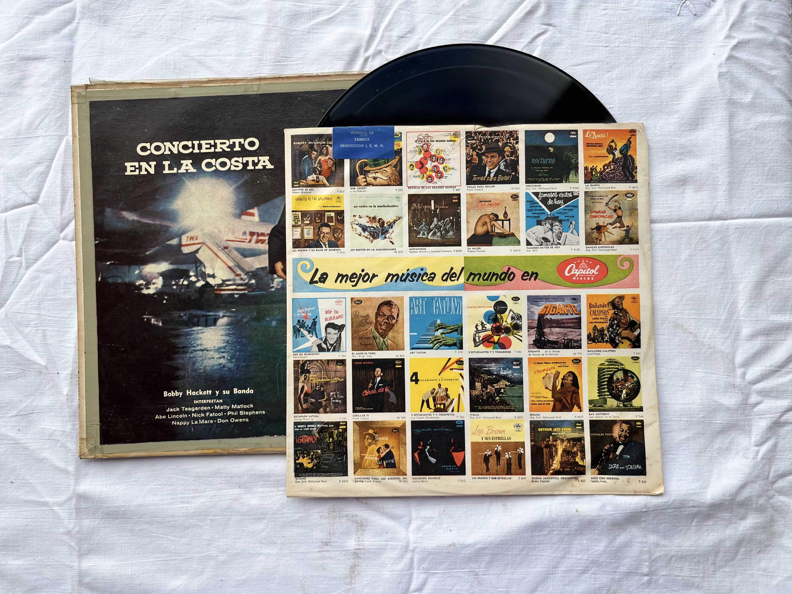 |  | Sus 15 Grandes Hits | El Gran Combo | A1 - Gran Combo's Boogaloo, A2 - Ojos Chinos, A3 - Jala Jala, A4 - Eso No Es Dificil Na', A5 - Falsaria, A6 - Pata Pata, A7 - Tu Querias Boogaloo, B1 - Acangana, B2 - Serrana, B3 - Masculino Y Feminino, B4 - Lo Que Dios Me Dio, B5 - A Mi Manera, B6 - Los Munequitos, B7 - El Caballo Pelotero, B8 - Que Me Importa | 1982 |
|  | no encontrado | no encontrado | no encontrado | no encontrado |
|  | Buenos Aires A Todo Tango | Raúl Garello Y Su Orquesta Típica | A1 - Invierno Porteño, A2 - Yira... Yira, A3 - Arrabal Amargo, A4 - Homenaje A Troilo (Responso, Garúa, Pa' Que Bailen Los Muchachos, Sur, Toda Mi Vida), A5 - A Media Luz, B1 - Muñeca De Marzo, B2 - Alma En Pena, B3 - Volver, B4 - Che Buenos Aires, B5 - Sentimiento Gaucho | 1977 |
|  | no encontrado | no encontrado | no encontrado | no encontrado |
|  | 'S Marvelous = Es Estupendo | Ray Conniff & His Orchestra | A1 - Como Luces Esta Noche = The Way You Look Tonight, A2 - Escucho Una Rapsodia = I Hear A Rhapsody, A3 - No Me Lo Pueden Quitar = They Can't Take That Away From Me, A4 - Serenata A La Luz De La Luna = Moonlight Serenade, A5 - Te Amo = I Love You, A6 - Se Lo Conté A Cada Estrellita = I've Told Every Little Star, B1 - Tu Me Haces Algo = You Do Something To Me, B2 - Según Pasan Los Años = As Time Goes By, B3 - En La Quietud De La Noche = In The Still Of The Night, B4 - Alguien Que Me Vigile = Someone To Watch Over Me, B5 - Sé Mi Amor = Be My Love, B6 - Donde O Cuando = Where Or When | 1960 |
| 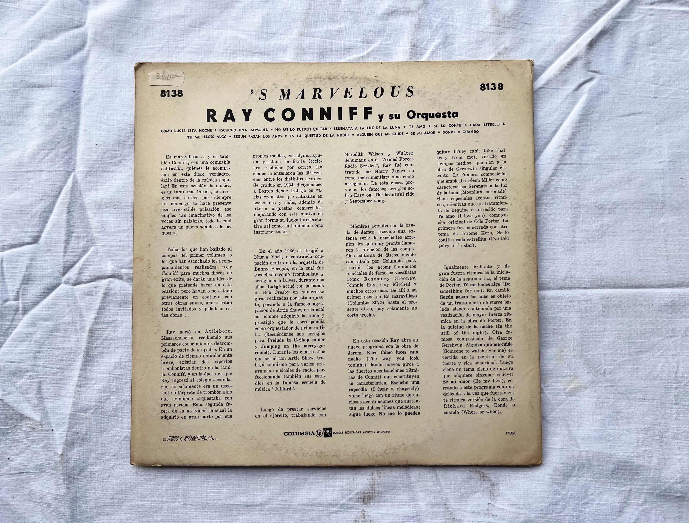 |  | no encontrado | no encontrado | no encontrado | no encontrado |
|  | Rhapsody In White | Love Unlimited Orchestra | A1 - Barry's Theme, A2 - Rhapsody In White, A3 - Midnight And You, A4 - I Feel Love Coming On, B1 - Baby Blues, B2 - Don't Take It Away From Me, B3 - What A Groove, B4 - Love's Theme | 1973 |
|  | You Might Have Belonged To Another / Oh! Look At Me Now | Tommy Dorsey And His Orchestra | A - You Might Have Belonged To Another, B - Oh! Look At Me Now | 0 |
|  | Tema De Amor De El Padrino | Ray Conniff | A1 - Tema De Amor De La Pelicula "El Padrino" (Amor, Hablamente Dulcemente), A2 - Hiriéndonos Mutuamente, A3 - Un Caballo Sin Nombre, A4 - Te Necesito, A5 - Viviendo En Una Casa Dividida, B1 - Pocos Y Apreciados, B2 - Sin Ti, B3 - El Trabajo de Un Vaquero Nunca Se Termina, B4 - La Primera Vez (Que Vi Tu Cara), B5 - Tema De "Shaft", B6 - El Camino Del Amor | 1972 |
|  | Interpreta 16 Exitos De Manuel Alejandro | Ray Conniff | A1 - Yo Soy Aquel, A2 - Cisne Cuello Negro, Cisne Cuello Blanco, A3 - Soy Rebelde, A4 - Detenedla Ya, A5 - Los Amantes, A6 - Te Estoy Queriendo Tanto, A7 - Señora, A8 - Lo Mejor De Tu Vida, B1 - Cuando Tu No Estás, B2 - Hablame Del Mar, Marinero , B3 - Como Yo Te Amo, B4 - Manuela , B5 - Que Non Se Rompa La Noche, B6 - Paloma Brava, B7 - Dueño De Nada , B8 - Voy A Perder La Cabeza Por Tu Amor | 1989 |
|  | Roberto Carlos | Roberto Carlos | A1 - La Distancia, A2 - Te Dije Adios, A3 - Detalles, A4 - La Montaña, A5 - Traumas, A6 - La Enamorada, B1 - Las Flores Del Jardin De Nuestra Casa, B2 - Que Sera De Ti, B3 - Por Amor, B4 - Ahora Yo Se, B5 - Usted Ya Me Olvido, B6 - Jesus Cristo | 1974 |
| 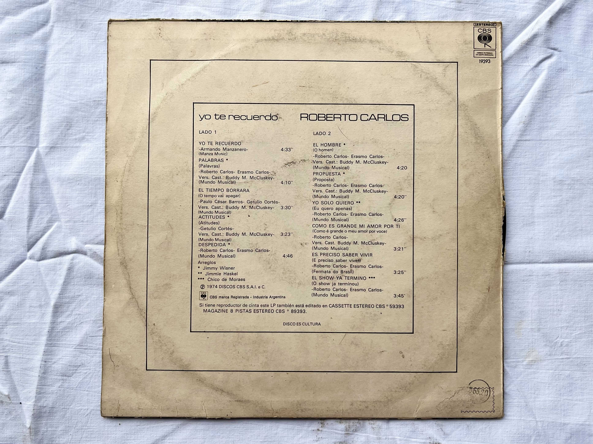 |  | no encontrado | no encontrado | no encontrado | no encontrado |
|  | Don't Let Me Be Misunderstood | Santa Esmeralda | - Don't Let Me Be Misunderstood + Esmeralda Suite, A.1 - Don't Let Me Be Misunderstood, A.2 - Esmeralda Suite, B1 - Gloria, B2 - You're My Everything, B3 - Black Pot | 0 |
|  | Living In The Streets | Kim Fowley | A1 - Motorboat, A2 - 25 Hours A Day, A3 - Big Bad Cadillac, A4 - Man Without A Country, A5 - California Summertime, A6 - Hollywood Nights, B1 - Born To Make You Cry, B2 - Thunder Road, B3 - Summertime Frog, B4 - Love Bomb, B5 - Living In The Streets, B6 - Sex, Dope & Violence | 1977 |
| 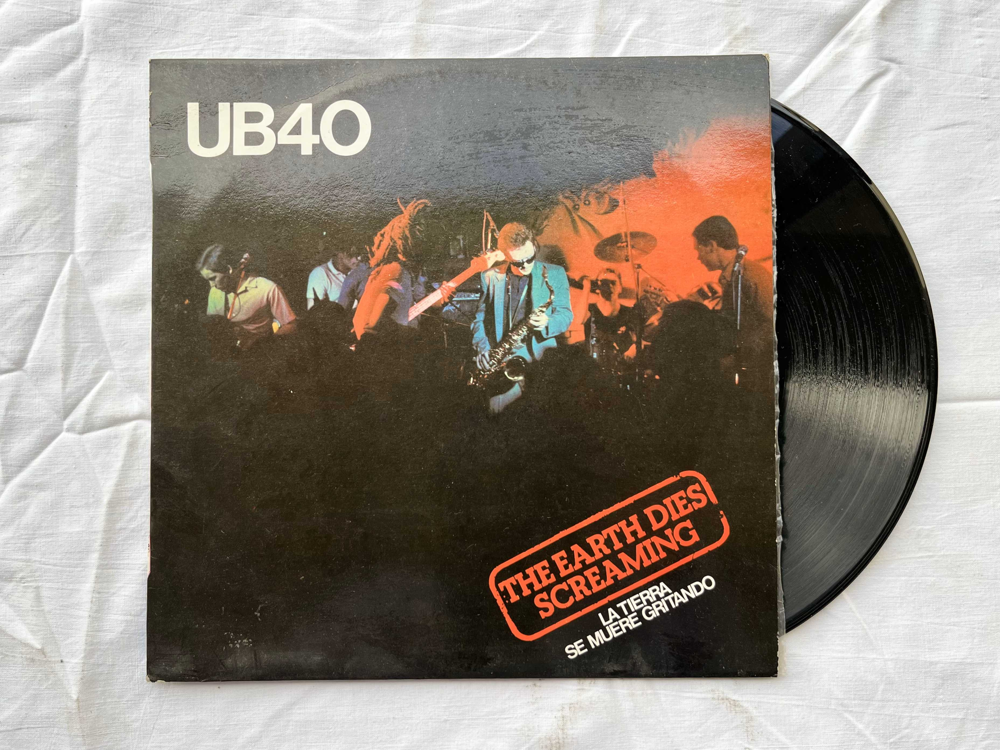 |  | The Earth Dies Screaming / Dream A Lie | UB40 | A - The Earth Dies Screaming, B - Dream A Lie | 1980 |
|  | The UB40 File | UB40 | A1 - Tyler, A2 - King, A3 - 12 Bar, A4 - Burden Of Shame, B1 - Adella, B2 - I Think It's Going To Rain Today, B3 - 25%, B4 - Food For Thought, B5 - Little By Little, B6 - Signing Off, C1 - Madam Medusa, C2 - Strange Fruit, C3 - Reefer Madness, D1 - My Way Of Thinking, D2 - The Earth Dies Screaming, D3 - Dream A Lie | 1985 |
|  | Escuchen La Magia De Benny Goodman En París | Benny Goodman And His Orchestra | A1 - Como Retenerlos En El Campo (Después De Ver París) = How 'Ya Gonna Keep 'Em Down On The Farm (After They've Seen Paree), A2 - Las Hojas Muertas = Autumn Leaves, A3 - Amo A Paris = I Love Paris, A4 - Abril En Paris = April In Paris, A5 - Un Hombre Y Una Mujer, A5 - Es Magnifico = C'est Magnique, B1 - Pequeña Flor = Petite Fleur (Little Flower), B2 - ¿Que Queda De Nuestros Amores? = I Wish You Love, B3 - Mimi, B4 - C'est Si Bon, B5 - Bajo Los Cielos De Paris = Under Paris Skies, B6 - Esperare Por Ti = I Will Wait For You | 0 |
|  | Sing, Sing, Sing | Benny Goodman | A - Sing, Sing, Sing (With A Swing), B1 - Bugle Call Rag, B2 - Mad House | 1958 |
| 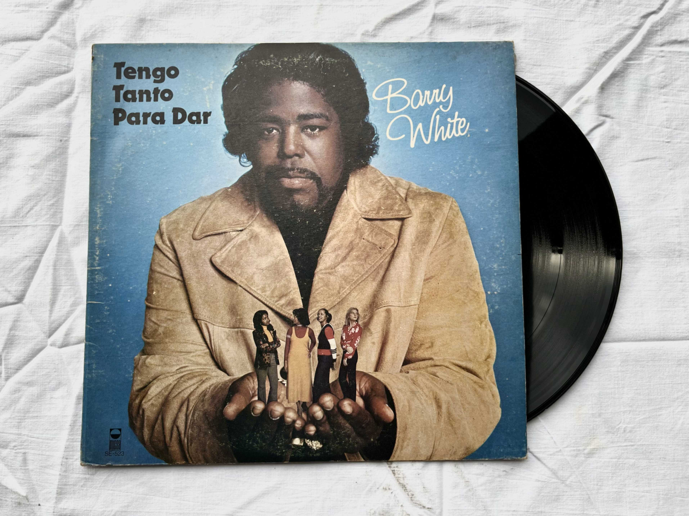 |  | I've Got So Much To Give | Barry White | A1 - Standing In The Shadows Of Love, A2 - Bring Back My Yesterday, B1 - I've Found Someone, B2 - I've Got So Much To Give, B3 - I'm Gonna Love You Just A Little More Baby | 1974 |
 | | I've Got So Much To Give | Barry White | A1 - Standing In The Shadows Of Love, A2 - Bring Back My Yesterday, B1 - I've Found Someone, B2 - I've Got So Much To Give, B3 - I'm Gonna Love You Just A Little More Baby | 1974 |
|  | Stone Gon' | Barry White | A1 - Girl It's True, Yes I'll Always Love You, A2 - Honey Please, Can't Ya See, A3 - You're My Baby, B1 - Hard To Believe That I Found You, B2 - Never Never Gonna Give Ya Up | 2018 |
|  | The Best Of Bob Crosby | Bob Crosby | A1 - South Rampart Street Parade, A2 - Honky Tonk Train Blues, A3 - The Big Noise From Winnetka, A4 - Boogie Woogie Maxixe, A5 - Summertime (Lullaby), B1 - I'm Prayin' Humble, B2 - What's New, B3 - Yancey Special, B4 - My Inspiration, B5 - Chain Gang, C1 - March Of The Bob Cats, C2 - Little Rock Getaway, C3 - Skaters' Waltz In Swingtime, C4 - Tea For Two, C5 - Diga Diga Doo, D1 - The Old Spinning Wheel, D2 - Gin Mill Blues, D3 - Vieni Vieni, D4 - Dogtown Blues, D5 - Stomp Off And Let's Go | 1975 |
|  | Exposure III | Transa | 1 - Queller, 2 - Mach 7, 3 - Rotation, 4 - Retrode, 5 - House Of God, 6 - Black & White (Chris Cowie Remix), 7 - Phuturefunk, 8 - Driven Innocence, 9 - Depths Of Time, 10 - Jack You Up (Bladerunnerz Remix), 11 - Reaktor, 12 - Hi Energy | 2001 |
|  | El Famoso 1938 Carnegie Hall Jazz Concierto - Volumen 1 | Benny Goodman | A1 - Don't Be That Way = No Seas Así, A2 - One O'Clock Jump = Salto De La Una, A3 - Dixieland One-Step = Paso Original De Dixieland, A4 - I'm Coming Virginia = Aquí Vengo Virginia, A5 - When Baby Smiles At Me = Cuando Mi Nena Me Sonríe, A6 - Shine = Brillo, A7 - Blue Reverie = Triste Reverie, A8 - Life Goes To A Party = La Vida Se Va De Fiesta, B1 - Honeysuckle Rose = Rosa Madreselva, B2 - Body And Soul = Cuerpo Y Alma, B3 - Avalon, B4 - The Man I Love = El Hombre Que Amo | 0 |
|  | no encontrado | no encontrado | no encontrado | no encontrado |
|  | England's Top 14 Of Pop, 20. Folge | Various | A1 - The Last Waltz, A2 - The Letter, A3 - I'll Never Fall In Love Again, A4 - See Emily Play, A5 - Let's Go To San Francisco, A6 - The Day I Met Marie, A7 - Creeque Alley, B1 - Massachusetts, B2 - Just Loving You, B3 - A Girl Like You, B4 - Flowers In The Rain, B5 - The House That Jack Built, B6 - Ode To Billie Joe, B7 - You Keep Me Hanging On | 1967 |
|  | 16 Top Hits - Aus Den Hitparaden 1984 Januar Februar | Various | A1 - Guardian Angel, A2 - Big Apple, A3 - Pulstar, A4 - Far From Over, A5 - Someone Belonging To Someone, A6 - Ways, A7 - Message On The Radio, A8 - Rockit, B1 - High Society Girl, B2 - Till I Can't Take Love No More, B3 - Die Sonne Und Du, B4 - Katharine, B5 - Roadrunner, B6 - How Old Are You?, B7 - Love In Itself, B8 - Mama | 1983 |
| | England's Top 14 Of Pop, 20. Folge | Various | A1 - The Last Waltz, A2 - The Letter, A3 - I'll Never Fall In Love Again, A4 - See Emily Play, A5 - Let's Go To San Francisco, A6 - The Day I Met Marie, A7 - Creeque Alley, B1 - Massachusetts, B2 - Just Loving You, B3 - A Girl Like You, B4 - Flowers In The Rain, B5 - The House That Jack Built, B6 - Ode To Billie Joe, B7 - You Keep Me Hanging On | 1967 |
|  | Las Canciones Millonarias De Manolo Escobar | Manolo Escobar | A1 - El Porompompero, A2 - Un Beso En El Puerto, A3 - ¡Viva Almeria!, A4 - Horóscopo, A5 - Tanguillos De La Defensa, A6 - Tu Nombre De Anita, B1 - Mi Carro, B2 - Mujeres Y Vino, B3 - La Morena De Mi Copla, B4 - Madrecita, María Del Carmen, B5 - Ni Se Compra..., B6 - Aires Navideños Jerezanos (Los Peces En El Río) | 1977 |
|  | Resurrección De La Alegría | María Jiménez | A1 - Llámame, A2 - Me Doy Entera, A3 - En Aquel Beso, A4 - Estoy En Ti, A5 - Háblame En La Cama, A6 - Frente A La Vida, B1 - Resurrección De La Alegria, B2 - Pero No Sé Si Viviré, B3 - Qué Quieres Que Diga De Ti, B4 - Si Te Vas, B5 - En La Oscuridad | 1979 |
|  | Oba Oba | Sargentelli | A1 - Abertura Com Sargentelli / Reunião de Bacana / Pega no Pilão, A2 - Sacode Pavao Santiago, A3 - o Samba nao tem cor Juracy, A4 - Talão de Cheques / Ana Maria / Amar Foi Minha Ruína / Se Eu Fosse Milionário / Vou Mudar de Vida / Lealdade / Domingo de Carnaval no Salgueiro, B1 - Saco Cheio, B2 - Trem dos Partideiros, B3 - Quanta Tristeza, B4 - Samba da Raça, B5 - A Primeira Vez / Idade de Fazer Bobagem / Quem É Que Não Sente / Última Lágrima / Inimigo do Samba / Adeus Mocidade / Eu Já Fui Rei / Desengano | 1980 |
|  | Sail Away | Randy Newman | A1 - Sail Away, A2 - Lonely At The Top, A3 - He Gives Us All His Love, A4 - Last Night I Had A Dream, A5 - Simon Smith And The Amazing Dancing Bear, A6 - Old Man, B1 - Political Science, B2 - Burn On, B3 - Memo To My Son, B4 - Dayton, Ohio - 1903, B5 - You Can Leave Your Hat On, B6 - God's Song (That's Why I Love Mankind) | 0 |
|  | The Benny Goodman Story | Benny Goodman | A1 - Let's Dance, A2 - Down South Camp Meetin', A3 - King Porter Stomp, A4 - It's Been So Long, A5 - Roll 'Em, A6 - Bugle Call Rag, B1 - Don't Be That Way, B2 - You Turned The Tables On Me, B3 - Goody Goody, B4 - Slipped Disc, B5 - Stompin' At The Savoy, B6 - One O'clock Jump, C1 - Memories Of You, C2 - China Boy, C3 - Moonglow, C4 - Avalon, D1 - And The Angels Sing, D2 - Jersey Bounce, D3 - Sometimes I'm Happy, D4 - Shine, D5 - Sing Sing Sing (With A Swing) | 1978 |
|  | Bailando en El Savoy - Noche Y Dia Colando A Casa | Benny Goodman | A1 - He Encontrado Una Nueva Chica (I've Found A New Baby), A2 - Mientras Yo Viva (As Long As I Live), A3 - Volando A Casa (Flying Home), A4 - 'Deed I Do, A5 - Avalon, A6 - Recuerdos De Ti (Memories Of You), A7 - Bailando En El Savoy, A8 - Si Yo Te Tuviera (If I Had You), A9 - Canta, Canta, Canta (Sing, Sing, Sing), B1 - Lady Be Good, B2 - Escalera A Las Estrellas (Stairway To The Stars), B3 - Rosa Madreselva (Honeysuckle Rose), B4 - Lindo Trabajo Si Lo Consigues (Nice Work If You Can Get It), B5 - Rosetta, B6 - Mean To Me, B7 - S-H-I-N-E, B8 - Noche Y Dia (Night And Day), B9 - El Salto De La Una (One O'clock Jump), B10 - Adios (Good-bye) | 0 |
|  | Hollywood By Night | Various | A1 - Spanish Harlem, A2 - Mexican Hat Twist, A3 - One Note Samba, A4 - Never On Sunday, A5 - Sing, Sing, Sing, A6 - Blue Tango, A7 - Let's Twist, B1 - Maria, B2 - Calcutta, B3 - Blue Safari, B4 - Twist Around Mister, B5 - Ramblin' Rose, B6 - Mac The Knife, B7 - I Can't Stop Loving You | 1963 |
| | Hollywood By Night | Various | A1 - Spanish Harlem, A2 - Mexican Hat Twist, A3 - One Note Samba, A4 - Never On Sunday, A5 - Sing, Sing, Sing, A6 - Blue Tango, A7 - Let's Twist, B1 - Maria, B2 - Calcutta, B3 - Blue Safari, B4 - Twist Around Mister, B5 - Ramblin' Rose, B6 - Mac The Knife, B7 - I Can't Stop Loving You | 1963 |
| | Hollywood By Night | Various | A1 - Spanish Harlem, A2 - Mexican Hat Twist, A3 - One Note Samba, A4 - Never On Sunday, A5 - Sing, Sing, Sing, A6 - Blue Tango, A7 - Let's Twist, B1 - Maria, B2 - Calcutta, B3 - Blue Safari, B4 - Twist Around Mister, B5 - Ramblin' Rose, B6 - Mac The Knife, B7 - I Can't Stop Loving You | 1963 |
|  | no encontrado | no encontrado | no encontrado | no encontrado |
|  | no encontrado | no encontrado | no encontrado | no encontrado |
|  | Cantando Por El Mundo | Los Olimareños | A1 - Aunque Nadie Quiera, Quiero, A2 - El Olimar Es Un Sueño, A3 - Opa Opa, A4 - ¿Y Ahora Qué?, A5 - Quisiera Escribirte, A6 - Aguafuerte, B1 - Terrón De Estos Rincones, B2 - La Sencillita, B3 - El Cuello De Botella, B4 - Cada Vez, B5 - Tendrías Que Llegar, B6 - Junto Al Jagüey | 1985 |
|  | no encontrado | no encontrado | no encontrado | no encontrado |
|  | Los Hermanos Pinzon / Vieja, Pobre, Flaca y Fea | Los Pao | A - Los Hermanos Pinzon, B - Vieja, Pobre, Flaca y Fea | 0 |
|  | no encontrado | no encontrado | no encontrado | no encontrado |
|  | no encontrado | no encontrado | no encontrado | no encontrado |
.jpg) |  | no encontrado | no encontrado | no encontrado | no encontrado |
| | Cantando Por El Mundo | Los Olimareños | A1 - Aunque Nadie Quiera, Quiero, A2 - El Olimar Es Un Sueño, A3 - Opa Opa, A4 - ¿Y Ahora Qué?, A5 - Quisiera Escribirte, A6 - Aguafuerte, B1 - Terrón De Estos Rincones, B2 - La Sencillita, B3 - El Cuello De Botella, B4 - Cada Vez, B5 - Tendrías Que Llegar, B6 - Junto Al Jagüey | 1985 |
|  | A Portrait Of Duke Ellington | Dizzy Gillespie And His Orchestra | 1 - In A Mellow Tone, 2 - Things Ain't What They Used To Be, 3 - Serenade To Sweden, 4 - Chelsea Bridge, 5 - Upper Manhattan Medical Group, 6 - Do Nothin' Till You Hear From Me, 7 - Caravan, 8 - Sophisticated Lady, 9 - Johnny Come Lately, 10 - Perdido, 11 - Come Sunday | 1984 |
|  | Despues De La Tormenta | Frank Quintero | A1 - La Dama De La Ciudad, A2 - Por Tenerte Cerca, A3 - Apóyate En Mí, A4 - La Visión De Una Gaviota, A5 - Dar Por Igual, A6 - Flama, B1 - Escaleras De Tu Mente, B2 - Lagartijo, B3 - Sóbalo, B4 - De Lunes A Viernes | 1977 |
|  | Selections From Peer Gynt Suites Nos. 1 & 2 And Suite Thursday | Duke Ellington And His Orchestra | - Selections From Grieg: Peer Gynt Suites Nos. 1 And 2, A1 - Morning Mood, A2 - In The Hall Of The Mountain King, A3 - Solvejg's Song, A4 - Ase's Death, A5 - Anitra's Dance, - Suite Thursday | 1962 |
|  | A Drum Is A Woman | Duke Ellington And His Orchestra | - Part 1, A1 - A Drum Is A Woman, A2 - Rhythm Pum Te Dum, A3 - What Else Can You Do With A Drum, - Part 2, A4 - New Orleans, A5 - Hey, Buddy Bolden, A6 - Carribee Joe, A7 - Congo Square, - Part 3, B1 - A Drum Is A Woman (Part 2), B2 - You Better Know It, B3 - Madam Zajj, B4 - Ballet Of The Flying Saucers, - Part 4, B5 - Zajj's Dream, B6 - Rhumbop, B7 - Carribee Joe (Part 2), B8 - Finale | 1973 |
|  | Sweet Music | Roadmaster (2) | A1 - It Doesn't Mean A Thing, A2 - I Must Be Dreaming, A3 - Ya Move Me, A4 - Been Gone Too Long, A5 - I'll Be Lovin' You, A6 - The Swan Song, B1 - You Come See Me, B2 - Higher, Higher, B3 - Circle Of Love, B4 - Sweet Music | 1978 |
|  | Mostly Blues | Louis Armstrong | A1 - Swing That Music, A2 - Tiger Rag, A3 - Baby Won't You Please Come Home, A4 - Storyville Blues, B1 - Jeepers Creepers, B2 - Do You Know What It Means To Miss New Orleans, B3 - Brother Bill, B4 - Old Rockin' Chair, B5 - Way Down Yonder In New Orleans | 1975 |
| | Mostly Blues | Louis Armstrong | A1 - Swing That Music, A2 - Tiger Rag, A3 - Baby Won't You Please Come Home, A4 - Storyville Blues, B1 - Jeepers Creepers, B2 - Do You Know What It Means To Miss New Orleans, B3 - Brother Bill, B4 - Old Rockin' Chair, B5 - Way Down Yonder In New Orleans | 1975 |
|  | Satchmo In Style | Louis Armstrong | 1 - Blueberry Hill, 2 - It's All In The Game, 3 - Jeannine (I Dream Of Lilac Time), 4 - Chloe (Song Of The Swamp), 5 - Indian Love Call, 6 - Listen To The Mocking Bird, 7 - That Lucky Old Sun, 8 - The Whiffenpoof Song, 9 - Trees, 10 - Bye And Bye, 11 - Spooks!, 12 - When It's Sleepy Time Down South, 13 - You're Just In Love, 14 - If, 15 - I Want A Big Butter And Egg Man, 16 - When It's Sleepy Time Down South (Alternate Lyrics) | 2001 |
|  | Immortal Concerts Series (1939-1958) | Louis Armstrong | A1 - Ain't Misbehavin', A2 - You Rascal You, A3 - Lazy River , A4 - Panama, A5 - Back O' Town Blues, A6 - Pale Moon , B1 - Lover , B2 - Body And Soul, B3 - Basin Street Blues, B4 - Do You Know What It Means To Miss New Orleans , B5 - Struttin' with Some Barbecue, B6 - Umbrella Man | 0 |
|  | A Portrait Of Benny Goodman | Benny Goodman | 1-1 - Stompin' At The Savoy, 1-2 - The Kingdom Of Swing, 1-3 - One O'Clock Jump, 1-4 - Sometimes I'm Happy, 1-5 - Anything For You, 1-6 - Goody Goody, 1-7 - Sugar Foot Stomp, 1-8 - I Want To Be Happy, 1-9 - Smoke House Rhythm, 1-10 - Louise, 1-11 - My Melancholy Baby, 1-12 - Ampola, 1-13 - These Foolish Things Remind Me Of You, 1-14 - Peckin', 1-15 - Lazy River, 1-16 - Why Don't You Do Right, 1-17 - Goodbye, 1-18 - What's New, 1-19 - Roll 'Em, 1-20 - Thanks For The Memory, 1-21 - Mission To Moscow, 1-22 - Taking A Chance On Love, 1-23 - Flying Home, 1-24 - Perfidia, 2-1 - King Porter Stomp, 2-2 - Topsy, 2-3 - Sing, Sing, Sing, 2-4 - Christopher Columbus, 2-5 - Smoke Dreams, 2-6 - Sandman, 2-7 - Down South Camp Meeting, 2-8 - You're Dangerous, 2-9 - Don't Be That Way, 2-10 - Ti Pi Tin, 2-11 - Make Believe, 2-12 - Japanese Sandman, 2-13 - Sing Me A Swing Song (And Let Me Dance), 2-14 - Sent For You Yesterday And Here You Come Today, 2-15 - He Ain't Got Rhythm, 2-16 - Changes, 2-17 - Nobody's Sweetheart, 2-18 - Bach Goes To Town, 2-19 - If I Could Be With You (One Hour Tonight), 2-20 - Limehouse Blues, 2-21 - Memories Of You, 2-22 - Rose Room, 2-23 - Stealin' Apples | 1997 |
|  | Star Power | Benny Goodman And His Orchestra | 01 - Sing, Sing, Sing, 02 - Lady Be Good, 03 - Henderson Stomp, 04 - Limehouse Blues, 05 - Ten Days With My Baby, 06 - Rachel's Dream, 07 - It's The Talk Of The Town, 08 - Gotta Be This Or That, 09 - Exactly Like You, 10 - After You've Gone, 11 - Rattle And Roll, 12 - Lucky | 2001 |
|  | no encontrado | no encontrado | no encontrado | no encontrado |
|  | no encontrado | no encontrado | no encontrado | no encontrado |
| | El Famoso 1938 Carnegie Hall Jazz Concierto - Volumen 1 | Benny Goodman | A1 - Don't Be That Way = No Seas Así, A2 - One O'Clock Jump = Salto De La Una, A3 - Dixieland One-Step = Paso Original De Dixieland, A4 - I'm Coming Virginia = Aquí Vengo Virginia, A5 - When Baby Smiles At Me = Cuando Mi Nena Me Sonríe, A6 - Shine = Brillo, A7 - Blue Reverie = Triste Reverie, A8 - Life Goes To A Party = La Vida Se Va De Fiesta, B1 - Honeysuckle Rose = Rosa Madreselva, B2 - Body And Soul = Cuerpo Y Alma, B3 - Avalon, B4 - The Man I Love = El Hombre Que Amo | 0 |
| | El Famoso 1938 Carnegie Hall Jazz Concierto - Volumen 1 | Benny Goodman | A1 - Don't Be That Way = No Seas Así, A2 - One O'Clock Jump = Salto De La Una, A3 - Dixieland One-Step = Paso Original De Dixieland, A4 - I'm Coming Virginia = Aquí Vengo Virginia, A5 - When Baby Smiles At Me = Cuando Mi Nena Me Sonríe, A6 - Shine = Brillo, A7 - Blue Reverie = Triste Reverie, A8 - Life Goes To A Party = La Vida Se Va De Fiesta, B1 - Honeysuckle Rose = Rosa Madreselva, B2 - Body And Soul = Cuerpo Y Alma, B3 - Avalon, B4 - The Man I Love = El Hombre Que Amo | 0 |
|  | B.G. In Hi-Fi | Benny Goodman | A1 - Let's Dance, A2 - Jumpin' At The Woodside, A3 - Stompin' At The Savoy, A4 - What Can I Say After I Say I'm Sorry?, A5 - When I Grow Too Old To Dream, A6 - Get Happy, A7 - You Brought A New Kind Of Love To Me, A8 - Rock Rimmon, B1 - Somebody Stole My Gal, B2 - Blue Lou, B3 - Sent For You Yesterday And Here You Come Today, B4 - You're A Sweetheart, B5 - Big John's Special, B6 - Jersey Bounce, B7 - Air Mail Special, B8 - Let's Dance | 1955 |
|  | no encontrado | no encontrado | no encontrado | no encontrado |
|  | no encontrado | no encontrado | no encontrado | no encontrado |
|  | Asi Se Canta El Tango | Various | A1 - Yira-Yira, A2 - Barrio De Tango, A3 - Malena, A4 - Bajo Belgrano, A5 - En Esta Tarde Gris, A6 - Barrio Pobre, A7 - De Todo Te Olvidas, B1 - Caminito, B2 - Preparate Pal Domingo, B3 - Remembranzas, B4 - Mocosita, B5 - Atenti Pebeta, B6 - Grisel, B7 - Cambalache | 0 |
| | Presentación Del Sexteto Tango | Sexteto Tango | A1 - La Bordona - Tango, A2 - Adiós Bardi - Tango, A3 - Quejas De Bandoneón - Tango, A4 - Sentimiento Gaucho - Tango, A5 - Milonga Del 900 - Milonga, A6 - Frente A Una Copa - Tango, B1 - N.N. - Tango, B2 - Danzarín - Tango, B3 - Quinto Año Nacional - Tango, B4 - Eso Es El Amor - Tango, B5 - Amurado - Tango, B6 - Una Canción - Tango | 0 |
|  | Sexteto Tango | Sexteto Tango | A1 - MI Dolor, A2 - Una Cancion, A3 - Alma Mia, A4 - Destino De Los Dos, A5 - Cuando Caigan Las Hojas, A6 - Sentimiento Gaucho, B1 - Mentira, B2 - La Ultima Copa, B3 - La Vieja Serenata, B4 - Frente A Una Copa, B5 - MI Cuidad Y Mi Gente, B6 - Ahora No Me Conoces | 1984 |
| | Sexteto Tango | Sexteto Tango | A1 - MI Dolor, A2 - Una Cancion, A3 - Alma Mia, A4 - Destino De Los Dos, A5 - Cuando Caigan Las Hojas, A6 - Sentimiento Gaucho, B1 - Mentira, B2 - La Ultima Copa, B3 - La Vieja Serenata, B4 - Frente A Una Copa, B5 - MI Cuidad Y Mi Gente, B6 - Ahora No Me Conoces | 1984 |
| | Sexteto Tango | Sexteto Tango | A1 - MI Dolor, A2 - Una Cancion, A3 - Alma Mia, A4 - Destino De Los Dos, A5 - Cuando Caigan Las Hojas, A6 - Sentimiento Gaucho, B1 - Mentira, B2 - La Ultima Copa, B3 - La Vieja Serenata, B4 - Frente A Una Copa, B5 - MI Cuidad Y Mi Gente, B6 - Ahora No Me Conoces | 1984 |
|  | no encontrado | no encontrado | no encontrado | no encontrado |
 |  | no encontrado | no encontrado | no encontrado | no encontrado |
|  | Lo Mejor Del Año Vol.6 | Various | A1 - María Isabel, A2 - Qué Tiempo Tan Feliz, A3 - Dizzy, A4 - El Río, A5 - Monsieur Dupont, A6 - Lo Mucho Que Te Quiero, A7 - Tema De Amor, B1 - Las Flechas Del Amor, B2 - Mama, B3 - Rezo Una Pequeña Oración, B4 - El Tiempo Vuela, B5 - Ob-La-Di, Ob-La-Da, B6 - Aleluya Del Silencio, B7 - Es Muy Fácil | 1969 |
|  | Lo Mejor Del Sexteto Tango | Sexteto Tango | A1 - La Bordona, A2 - Quejas De Bandoneon, A3 - El Engobbiao, A4 - Danzarin, A5 - El Choclo, A6 - Mala Junta, B1 - A Fuego Lento, B2 - Fuegos Artificiales, B3 - Adios Bardi, B4 - Trasnoche, B5 - El Arranque, B6 - Una Piba Como Vos | 0 |
| | Lo Mejor Del Sexteto Tango | Sexteto Tango | A1 - La Bordona, A2 - Quejas De Bandoneon, A3 - El Engobbiao, A4 - Danzarin, A5 - El Choclo, A6 - Mala Junta, B1 - A Fuego Lento, B2 - Fuegos Artificiales, B3 - Adios Bardi, B4 - Trasnoche, B5 - El Arranque, B6 - Una Piba Como Vos | 0 |
| | Presentación Del Sexteto Tango | Sexteto Tango | A1 - La Bordona - Tango, A2 - Adiós Bardi - Tango, A3 - Quejas De Bandoneón - Tango, A4 - Sentimiento Gaucho - Tango, A5 - Milonga Del 900 - Milonga, A6 - Frente A Una Copa - Tango, B1 - N.N. - Tango, B2 - Danzarín - Tango, B3 - Quinto Año Nacional - Tango, B4 - Eso Es El Amor - Tango, B5 - Amurado - Tango, B6 - Una Canción - Tango | 0 |
|  | Star-Collection | The Glenn Miller Orchestra | A1 - Introduction: Moonlight Serenade, A2 - In The Mood, A3 - A String Of Pearls, A4 - Chattanooga Choo Choo, A5 - Sunrise Serenade, A6 - Sun Valley Jump, B1 - St. Louis Blues March, B2 - Elmer's Tune, B3 - Wham, B4 - Rhapsody In Blue, B5 - American Patrol | 1973 |
 |  | no encontrado | no encontrado | no encontrado | no encontrado |
|  | Com-Pack | Sérgio Mendes & Brasil '77 | A1 - Mais Que Nada, A2 - Masquerade, A3 - The Look Of Love, A4 - Scarborough Fair, A5 - Going Out Of My Head, A6 - Constant Rain (Chove Chuva), B1 - Daytripper, B2 - Moanin', B3 - The Frog, B4 - The Joker, B5 - For Me, B6 - Laia Ladaia (Reza), C1 - Fool On The Hill, C2 - (Sittin' On) The Dock Of The Bay, C3 - Batucada (The Beat), C4 - Night And Day, C5 - Upa, Neguinho, C6 - Chelsea Morning, D1 - Pais Tropical (Tropical Land), D2 - Wichita Lineman, D3 - Agua De Beber, D4 - Wave, D5 - Pretty World, D6 - What The World Needs Now | 1971 |
|  | Emorio / Magalenha (Dance Remixes) | Sérgio Mendes | 1 - Emorio (Paul Oakenfold Extended Club Mix), 2 - Emorio (Paul Oakenfold Club Mix), 3 - Emorio (Paul Oakenfold Dub), 4 - Emorio (Paul Oakenfold Instrumental), 5 - Emorio (Paul Oakenfold Radio Edit), 6 - Emorio (Album Version), 7 - Magalenha (Moto Blanco Extended) (2010 Remix), 8 - Magalenha (Moto Blanco Dub) (2010 Remix), 9 - Magalenha (Moto Blanco Edit) (2010 Remix), 10 - Magalenha (Album Version) | 2010 |
|  | Greensleeves | Mantovani And His Orchestra | A1 - Dear Love My Love, A2 - Greensleeves, A3 - Mexicali Rose, A4 - It Happened In Monterey, A5 - Poeme (Moonlight Madonna), A6 - I Love You Truly, B1 - Lovely Lady, B2 - Love, Here Is My Heart, B3 - At Dawning, B4 - Was It A Dream?, B5 - Love Makes The World Go 'Round, B6 - Dancing With Tears In My Eyes | 1952 |
|  | The Horowitz Concerts 1975/1976 | Vladimir Horowitz | - Concerto Without Orchestra (Grand Sonata No. 3 In F Minor, Op. 14), B2 - Sonata No. 5, Op. 53 | 1976 |
|  | Brasil Guitar Magic | Laurindo Almeida | 1 - Samba Medley (Bahina, Maria And Brazil), 2 - O Barquinho (Little Boat), 3 - The Busy Bee, 4 - Canto Do Ossanha (Chant Of Ossanya), 5 - Samba Triste, 6 - Escadoo, 7 - Air On A G String, 8 - Dorival, 9 - Garota De Ipanema, 10 - Berimbau, 11 - Euridice, 12 - Deve Ser Amor, 13 - Choro Para Metronome, 14 - Berceuse A Jessara, 15 - Adagio, 16 - Prelude, 17 - Samba En Preludio | 1999 |
|  | no encontrado | no encontrado | no encontrado | no encontrado |
 |  | no encontrado | no encontrado | no encontrado | no encontrado |
|  | no encontrado | no encontrado | no encontrado | no encontrado |
|  | Disco Fantasy | Thomas Escovedo | A1 - Doesn't Anybody Want To Hear A Love Song, A2 - Disco Fantasy, A3 - Hot Soul Single, A4 - Who Do You Want To Love, A5 - Won't You Gimme The Funk, B1 - Trash Man, B2 - Something Special, B3 - Your Kind Of Loving, B4 - Soul Support | 1977 |
|  | Put A Hold On It | Eddy Grant | A - Put A Hold On It (New York Club Mix), B1 - Put A Hold On It, B2 - Put A Hold On It (New York Mix 7" Edit) | 1988 |
|  | Can't Get Enough | Eddy Grant | A1 - Do You Feel My Love, A2 - Time To Let Go, A3 - That Is Why, A4 - I Love To Truck, B1 - Can't Get Enough Of You, B2 - Give Yourself To Me, B3 - I Love You Yes, I Love You, B4 - Kill 'Em With Kindness, B5 - California Style | 1981 |
|  | I Love You Yes, I Love You | Eddy Grant | A - I Love You Yes, I Love You, B - California Style | 1981 |
 |  | Un Ramillete De Valses De Strauss | Helmut Zacharias And His Orchestra | A1 - Golondrinas En La Aldea, A2 - El Bello Danubio Azul, B1 - Sangre Vienesa, B2 - Vida De Artista | 1958 |
|  | no encontrado | no encontrado | no encontrado | no encontrado |
|  | Blondes Have More Fun | Rod Stewart | A1 - Da Ya Think I'm Sexy?, A2 - Dirty Weekend, A3 - Ain't Love A Bitch, A4 - The Best Days Of My Life, A5 - Is That The Thanks I Get?, B1 - Attractive Female Wanted, B2 - Blondes (Have More Fun), B3 - Last Summer, B4 - Standin' In The Shadows Of Love, B5 - Scarred And Scared | 1978 |
|  | no encontrado | no encontrado | no encontrado | no encontrado |
|  | no encontrado | no encontrado | no encontrado | no encontrado |
|  | no encontrado | no encontrado | no encontrado | no encontrado |
|  | no encontrado | no encontrado | no encontrado | no encontrado |
|  | Toquinho & Vinicius | Toquinho & Vinicius | 1-1 - Onde Anda Você, 1-2 - Acorde Solto No Ar, 1-3 - Turbilhâo, 2-1 - Se Ela Quisesse, 2-2 - Caro Raul, 2-3 - Um Homem Chamado Alfredo | 1979 |
| | Toquinho & Vinicius | Toquinho & Vinicius | 1-1 - Onde Anda Você, 1-2 - Acorde Solto No Ar, 1-3 - Turbilhâo, 2-1 - Se Ela Quisesse, 2-2 - Caro Raul, 2-3 - Um Homem Chamado Alfredo | 1979 |
|  | A Toda Maquina | Trocha Angosta | A1 - En La Playa, A2 - Yo Me Pregunto, A3 - Mañana, A4 - Tema De Un Hombre Triste, A5 - Encontraras Tu Camino, A6 - Solo Busco Una Mujer, B1 - Cuando Seas Viejo, B2 - Veo La Tarde Gris, B3 - Quiero Volver A Mi Ciudad, B4 - Lado "B" Banda Cuatro, B5 - No Llores Muchacha | 1971 |
|  | no encontrado | no encontrado | no encontrado | no encontrado |
|  | Malagueña | Percy Faith & His Orchestra | A1 - Siboney, A2 - La Cumparsa, A3 - Tumbando Caña, A4 - Marta, A5 - Mama Ines, A6 - Para Vigo Me Voy, A7 - Tabu, B1 - Malagueña, B2 - Quiereme Mucho, B3 - El Manisero, B4 - Danza Negra, B5 - Andalucía, B6 - El Bodeguero, B7 - Damisela Encantadora | 1976 |
 |  | El Mundo De La Opera 18 Selecciones De Operas Favoritas | André Kostelanetz | A1 - "Cuentos De Hoffmann" Barcarola, A2 - "Fausto" Vals, A3 - "Cavalleria Rusticana" Intermezzo, A4 - "Thais" Meditacion, A5 - "La Bohemia" Vals Musetta, A6 - "El Amor Por Tres Naranjas" Marcha, A7 - "Gianni Schicchi" Oh, Mi Querido Padre, A8 - "Madame Butterfly" Un Bello Dia, A9 - "Tosca" Por Arte Y Amor, B1 - "Rigoletto" Las Mujeres Son Volubles, B2 - "Aida" Celeste Aida, B3 - "La Traviata" Tiene Que Ser El Y Siempre Libre, B4 - "Sanson Y Dalila" Mi Corazon Se Abre A Tu Dulce Voz, B5 - "El Murcielago" Vals, B6 - "Payasos" Adelante Con La Obra, B7 - "Carmen" Los Toreros, B8 - "Los Pescadores De Perlas" Oigo Como Un Sueño, B9 - "Louise" Siempre Desde Ese Dia | 0 |
 | | Vol. 3° | Alfio Lombardi | A1 - Buon Natale Amore, A2 - Una Magnifica Serata, A3 - Pareva Na Santa, A4 - Chianu Chianu, A5 - Immagine, B1 - Chitarra Mia, B2 - Ultimo Incontro, B3 - Avvicinati, B4 - Amicizia, B5 - Quanta Buscie | 0 |
| | Vol. 3° | Alfio Lombardi | A1 - Buon Natale Amore, A2 - Una Magnifica Serata, A3 - Pareva Na Santa, A4 - Chianu Chianu, A5 - Immagine, B1 - Chitarra Mia, B2 - Ultimo Incontro, B3 - Avvicinati, B4 - Amicizia, B5 - Quanta Buscie | 0 |
|  | no encontrado | no encontrado | no encontrado | no encontrado |
|  | Electronic Music IV | Various | A1 - Cetus, A2 - Ariel, A3 - Dixi, B1 - Eclipse, B2 - Bozzetti, B3 - Orthogenesis | 1969 |
.jpg) |  | Vol. 5 | Frank Sinatra | A1 - An Orchid From My Lady = Una Orquidea Para Mi Dama, A2 - Tennesse Newsboy = Nuevos Chicos De Tennesse, A3 - All Thru The Day = Todo A Traves Del Dia, A4 - I Fall In Love With You Every Day = Yo Estoy Enamorada De Ti Todo El Dia, A5 - Oh, What A Beautiful Morning = Oh, Que Hermosa Mañana, A6 - It All Came True = Todo Salio Cierto, B1 - Neiani, B2 - Day Break = Dia Roto, B3 - I Tried = Yo Trate, B4 - April Played The Fiddle = Abril Toca El Violin, B5 - I Haven't Time To De A Millionaire = Yo No Tengo Tiempo Para Ser Millonario, B6 - Two In Love = Dos Enamorados | 1981 |
| | Vol. 5 | Frank Sinatra | A1 - An Orchid From My Lady = Una Orquidea Para Mi Dama, A2 - Tennesse Newsboy = Nuevos Chicos De Tennesse, A3 - All Thru The Day = Todo A Traves Del Dia, A4 - I Fall In Love With You Every Day = Yo Estoy Enamorada De Ti Todo El Dia, A5 - Oh, What A Beautiful Morning = Oh, Que Hermosa Mañana, A6 - It All Came True = Todo Salio Cierto, B1 - Neiani, B2 - Day Break = Dia Roto, B3 - I Tried = Yo Trate, B4 - April Played The Fiddle = Abril Toca El Violin, B5 - I Haven't Time To De A Millionaire = Yo No Tengo Tiempo Para Ser Millonario, B6 - Two In Love = Dos Enamorados | 1981 |
|  | Vitamina T Volumen 1 | Various | 1 - A.B.S., 2 - Despertar, 3 - Psicosis, 4 - Transiberian E., 5 - Crazy, 6 - Techno, 7 - Desire, 8 - Sister Keep On Doin' It, 9 - Operation In Taegu, 10 - Suspense 1ª Parte, 11 - Intro, 12 - Fucking For Money, 13 - Mackromegamix | 1992 |
|  | Calidad Sembrada | Las Voces Blancas | A1 - Solamente Agua, A2 - Tres Dias, A3 - Ha Yegao La Primavera, A4 - Triste Chaqueño, A5 - Juanito Laguna Remonta Un Barrilete, A6 - El Sable Y La Cruz, B1 - Entre Tu Y Yo, B2 - San Baltazar, B3 - Cuna Pobre, B4 - Ya Viene Soplando El Zonda, B5 - Nostalgias De Gardel:, B5a - Lejana Tierra Mia, B5b - Arrabal Amargo, B5c - Golondrinas, B5d - Mi Buenos Aires Querido, B6 - Cantorcitos | 1968 |
|  | no encontrado | no encontrado | no encontrado | no encontrado |
|  | El Dia Que Me Quieras | Roberto Carlos | A1 - Actitudes = Atitudes, A2 - Propuesta = Proposta, A3 - Amigos, Amigos, A4 - Palabras = Palavras, A5 - La Gitana = A Cigana, B1 - El Dia Que Me Quieras, B2 - El Hombre = O Homem, B3 - Rutina = Rotina, B4 - Sueño Lindo = Sonho Lindo | 1974 |
| 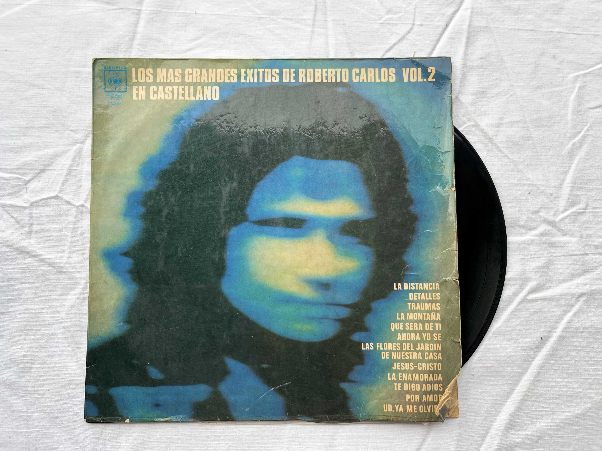 | | El Dia Que Me Quieras | Roberto Carlos | A1 - Actitudes = Atitudes, A2 - Propuesta = Proposta, A3 - Amigos, Amigos, A4 - Palabras = Palavras, A5 - La Gitana = A Cigana, B1 - El Dia Que Me Quieras, B2 - El Hombre = O Homem, B3 - Rutina = Rotina, B4 - Sueño Lindo = Sonho Lindo | 1974 |
|  | Roberto Carlos | Roberto Carlos | A1 - Detalhes, A2 - Como Dois E Dois, A3 - A Namorada, A4 - Você Não Sabe O Que Vai Perder, A5 - Traumas, A6 - Eu Só Tenho Um Caminho, B1 - Todos Estão Surdos, B2 - Debaixo Dos Caracóis Dos Seus Cabelos, B3 - Se Eu Partir, B4 - I Love You, B5 - De Tanto Amor, B6 - Amada, Amante | 1971 |
|  | Roberto Carlos | Roberto Carlos | A1 - La Venana = A Janela, A2 - Como Estas Tu = Como Vai Você, A3 - Estas Tan Linda = Você é Linda , A4 - Negra, A5 - Acalanto, A6 - Por Amor, B2 - La Distancia = À Distância , B2 - La Montaña = A Montanha , B3 - Usted Ya Me Olvido = Você Já Me Esqueceu , B4 - Cuantos Los Niños Salen A Vacaciones = Quando As Crianças Sairem De Férias , B5 - El Divan = O Divã , B6 - Ahora Yo Se = Agora Eu Sei | 1973 |
|  | El Baile De Los Pajaritos / Vals De Kleeper / El Baile De Los Gaticos / Tick -Tac Polka | Electronica"S | A1 - El Baile De Los Pajaritos, A2 - Vals De Kleeper, B1 - El Baile De Los Gaticos, B2 - Tick - Tack Polka | 1982 |
|  | Mardo | Mardo Mardirossian | A1 - Leili Yari Nman, A2 - Ardemis, A3 - Sari La La, A4 - Mekhagner, A5 - Odjakhoum, A6 - Zartar Groug, B1 - Ardou Ganoukh, B2 - Djichtes Assoum, B3 - Gaboudag Atcher, B4 - Siroun Aghtchig, B5 - Kazbek, B6 - Khaytogh Poucher | 1975 |
|  | no encontrado | no encontrado | no encontrado | no encontrado |
|  | no encontrado | no encontrado | no encontrado | no encontrado |
| 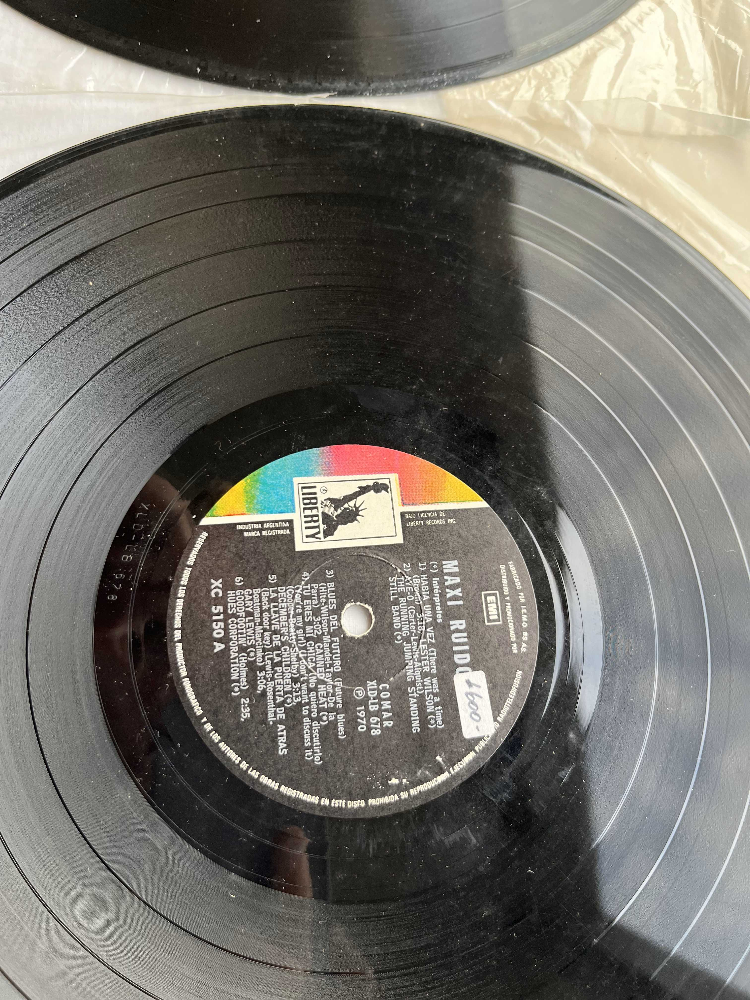 |  | no encontrado | no encontrado | no encontrado | no encontrado |
|  | no encontrado | no encontrado | no encontrado | no encontrado |
|  | no encontrado | no encontrado | no encontrado | no encontrado |
|  | Pa 'Alante | Orquesta Dee Jay | A1 - Las Malas Lenguas, A2 - Black Shadow, A3 - Campesino, A4 - Cuba, B1 - Camaguela, B2 - Ye-Ma-Ya, B3 - Te Traigo, B4 - La Jara | 1970 |
| | Mardo | Mardo Mardirossian | A1 - Leili Yari Nman, A2 - Ardemis, A3 - Sari La La, A4 - Mekhagner, A5 - Odjakhoum, A6 - Zartar Groug, B1 - Ardou Ganoukh, B2 - Djichtes Assoum, B3 - Gaboudag Atcher, B4 - Siroun Aghtchig, B5 - Kazbek, B6 - Khaytogh Poucher | 1975 |
.jpg) |  | The Best Of The Blues | Various | A1 - Diggin' My Potatoes, A2 - Uncle Sam's Blues, A3 - Bertha May, A4 - Christina, Christina Blues, A5 - Vitamin A Blues, A6 - Don't Cry Baby, B1 - The Way I Feel, B2 - City Hall Blues, B3 - Early In The Morning, B4 - One Room Country Shack, B5 - Copenhagen Woman, B6 - Boots And Roses | 1973 |
|  | Originalaufnahmen 1939-1940 | Glenn Miller And His Orchestra | A1 - In The Mood, A2 - I Know Why, A3 - American Patrol, A4 - Moonlight Sonata, B1 - Chattanooga Choo-Choo, B2 - Boom Shot, B3 - I've Got A Gal In Kalamazoo, B4 - Sun Valley Jump, B5 - Moonlight Serenade | 1963 |
|  | The Complete Tommy Dorsey Vol. I / 1935 | Tommy Dorsey | A1 - Take Me Back To My Boots And Saddle, A2 - Weary Blues, A3 - Santa Claus Is Comin' To Town, A4 - You Are My Lucky Star, A5 - I've Got A Feelin' You're Foolin', A6 - Got A Bran' New Suit, A7 - Now You've Got Me Doin' It, A8 - I've Got A Note, B1 - That's Not Cricket, B2 - What A Wonderful World, B3 - On Treasure Island, B4 - I'm Getting Sentimental Over You, B5 - It's Written In The Stars, B6 - One Umbrella For Two, B7 - Two Hearts Carved On A Lonesome Pine, B8 - Don't Give Up The Ship, C1 - Alone, C2 - At A Little Church Affair, C3 - Pagan Star, C4 - How Do I Rate With You, C5 - The Music Goes Round And Round, C6 - (If I Had) Rhythm In My Nursery Rhymes, C7 - Lovely Lady, C8 - Weary, D1 - I'm Shooting High, D2 - I Picked A Flower The Color Of Your Eyes, D3 - Please Believe Me, D4 - Let It Be Me, D5 - One Night In Monte Carlo, D6 - The Day I Let You Get Away, D7 - Love Will Live On, D8 - Then I Shan't Love You Anymore | 1976 |
|  | no encontrado | no encontrado | no encontrado | no encontrado |
|  | May Day | Various | A1 - Sinan Savaşkan, Graham Bradshaw & Graham Tattersall, A2 - Pipe Percussion Duo, B1 - Heuristic Music, B2 - Heuristic Music, B3 - A+B. Stuart Boardman, Dave Draper & Michael Williams | 1980 |
| | May Day | Various | A1 - Sinan Savaşkan, Graham Bradshaw & Graham Tattersall, A2 - Pipe Percussion Duo, B1 - Heuristic Music, B2 - Heuristic Music, B3 - A+B. Stuart Boardman, Dave Draper & Michael Williams | 1980 |
|  | Das Ist Dixieland | Two Beat Stompers | A1 - Kansas City Stomp, A2 - Melancholy Blues, B1 - Some Of These Days, B2 - Herbie's First Blues | 1956 |
| | Das Ist Dixieland | Two Beat Stompers | A1 - Kansas City Stomp, A2 - Melancholy Blues, B1 - Some Of These Days, B2 - Herbie's First Blues | 1956 |
 |  | 1934-1935 | Richard Himber And His Ritz-Carlton Hotel Orchestra | A1 - When A Woman Loves A Man, A2 - Love Thy Neighbor, A3 - May I?, A4 - A Thousand Goodnights, A5 - Ending With A Kiss, A6 - It's Psychological, A7 - Night On The Desert, A8 - Straight From The Shoulder (Right From The Heart), B1 - Fun To Be Fooled, B2 - Let's Take A Walk Around The Block, B3 - What Can You Say In A Love Song, B4 - You're A Builder Upper, B5 - June In January, B6 - With Every Breath I Take, B7 - Stars Fell On Alabama, B8 - Tea For Two, C1 - Avalon, C2 - If I Had A Million Dollars, C3 - What A Difference A Day Made, C4 - When Love Comes Swinging Along, C5 - Say When, C6 - Must We Say Goodnight (So Soon?), C7 - Were You Foolin', C8 - Winter Wonderland, D1 - In A Blue And Pensive Mood, D2 - Autumn In New York, D3 - I Woke Up Too Soon, D4 - Dancing With My Shadow, D5 - Lullaby Of Broadway, D6 - Ev'rything's Been Done Before, D7 - Things Might Have Been So Different, D8 - I'm Going Down To Dance At Clancy's | 1975 |
|  | Koliko Te Volim - Romanse 2 | Various | A1 - Kroz Polje Idu Cigani, A2 - Što To Šušti Bagrem Beli, A3 - Rjabinuška, A4 - Beli Bagrem, A5 - Kad Bi Moja Bila, A6 - Evo Banke Cigane Moj, B1 - Ja Nemam Prava Ninakakvu Sreću, B2 - Ko Lepi San, B3 - Višnjeve Boje San, B4 - Čežnjivi Valcer, B5 - Koliko Te Volim, B6 - Ko S Pesmom Kroz Život Korača | 1972 |
|  | Mujeres Argentinas | Mercedes Sosa | A1 - Gringa Chaqueña - Tema De Guarania, A2 - Juana Azurduy - Aire De Cueca Norteña, A3 - Rosarito Vera, Maestra - Zamba, A4 - Dorotea, La Cautiva - Milonga Pampeana, B1 - Alfonsina Y El Mar - Zamba, B2 - Manuela La Tucumana - Triunfo, B3 - Las Cartas De Guadalupe - Canción, B4 - En Casa De Mariquita - Refalosa | 0 |
|  | no encontrado | no encontrado | no encontrado | no encontrado |
 |  | no encontrado | no encontrado | no encontrado | no encontrado |
|  | no encontrado | no encontrado | no encontrado | no encontrado |
|  | no encontrado | no encontrado | no encontrado | no encontrado |
|  | no encontrado | no encontrado | no encontrado | no encontrado |
|  | no encontrado | no encontrado | no encontrado | no encontrado |
.jpg) |  | no encontrado | no encontrado | no encontrado | no encontrado |
|  | no encontrado | no encontrado | no encontrado | no encontrado |
|  | Lapti Nek / Main Title (Original Soundtrack From The Movie "Return Of The Jedi") | John Williams (4) | A - Lapti Nek, B - Tema Principal (La Historia Continúa) | 1983 |
|  | Ella Y Los Colores / Cancion Del Lobo | Orion's Beethoven | A - Ella Y Los Colores, B - Cancion Del Lobo | 1976 |
|  | Marejada Feliz / Que Me Lo Den En Vida | Roberto Roena Y Su Apollo Sound | A - Marejada Feliz , B - Que Me Lo Den En Vida | 0 |
|  | no encontrado | no encontrado | no encontrado | no encontrado |
|  | The Basin Street Six Playing Strictly Dixie | Basin Street Six | A1 - Panama, A2 - Sunday, A3 - Hindustan, A4 - I Can't Give You Anything But Love, A5 - Melancholy Rhapsody, A6 - My Inspiration, B1 - That's A Plenty, B2 - Tin Roof Blues, B3 - Muskrat Ramble, B4 - Farewell Blues, B5 - When It's Sleepy Time Down South, B6 - Basin Street Stomp | 0 |
|  | no encontrado | no encontrado | no encontrado | no encontrado |
|  | Holiday In Tyrol | Various | A1 - Tiroler Holzhackerbuam, A2 - Bergvagabunden, A3 - Seerosenwalzer, A4 - Zillertal, Du Bist Mei' Freud, A5 - Holz Auf Stroh, A6 - Bei Der Nacht, Wenns Finster Wird, A7 - Wenn Es Schneit Im Zillertal, A8 - Geh' Mach Dei Fenster Auf, B1 - Steig'n Mer Auf's Gamsgebirg, B2 - Wenn Ich Auf Hohen Bergen Steh', B3 - Bei Uns In Tirol, B4 - Appenzeller, B5 - Ein Jodler Aus Tirol, B6 - Zillertaler-Marsch, B7 - Kuhglocken-Plattler, B8 - Wo Auf Steilen Felsenwänden | 0 |
| 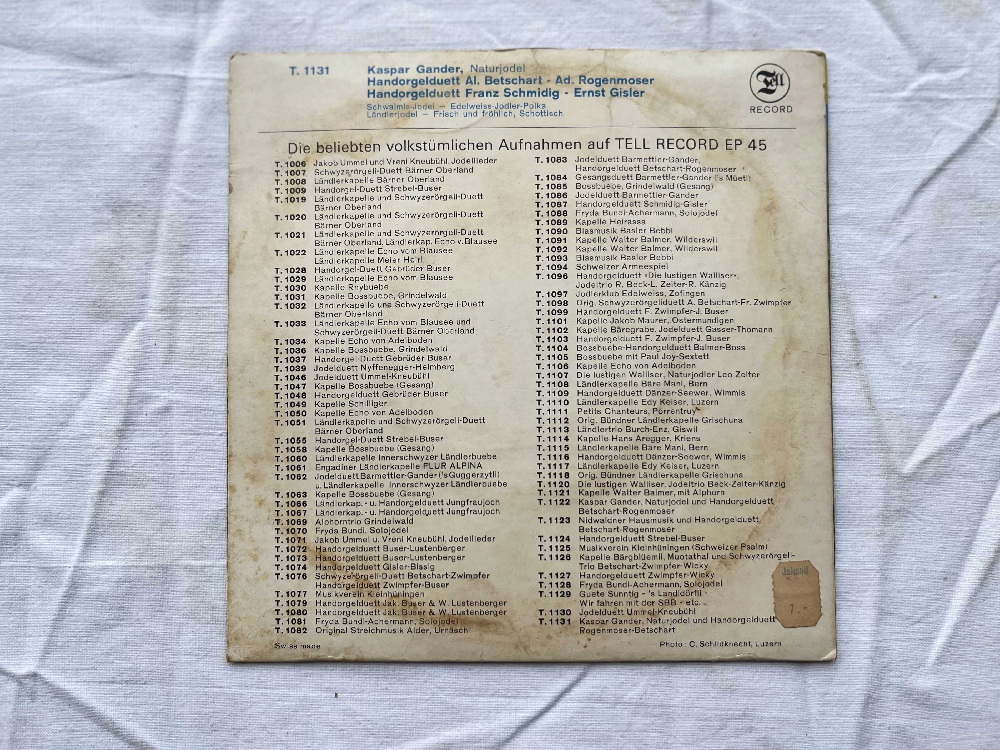 |  | Benjamin Blümchen Verliebt Sich | Elfie Donnelly | A - Benjamin Blümchen Verliebt Sich, B - Benjamin Blümchen Verliebt Sich | 0 |
 | | Lapti Nek / Main Title (Original Soundtrack From The Movie "Return Of The Jedi") | John Williams (4) | A - Lapti Nek, B - Tema Principal (La Historia Continúa) | 1983 |
| | Ella Y Los Colores / Cancion Del Lobo | Orion's Beethoven | A - Ella Y Los Colores, B - Cancion Del Lobo | 1976 |
|  | Hogar A Orillas Del Mar = Home By The Sea | Genesis | A - Hogar A Orillas Del Mar = Home By The Sea, B - Segundo Hogar A Orillas Del Mar = Home By The Seasecond Home By The Sea | 1984 |
|  | Birth | Birth (4) | A1 - 100 Year Old Egg, A2 - Mineral Rights, A3 - Factory Line, A4 - Clouds, B1 - Emerging Manhood, B2 - Total Cop, B3 - Third Eye, B4 - Tropical Depression | 2010 |
|  | Recuerdo De Amor / Chiquilina | Los Iracundos | A - Recuerdo De Amor, B - Chiquilina | 1969 |
|  | Yo No Cambio El Cielo Ni La Rosa | Nelly & Tony | A - Yo No Cambio El Cielo Ni La Luna, B - Popotitos (Bony Moronie) | 0 |
|  | Como Si Fuera Pecao - Mira Si Soy Inocente | Manuel de Paula | A - Como Si Fuera Pecao, B - Mira Si Soy Inocente | 1975 |
|  | Freedom Fighters | Dalek I | A - Freedom Fighters, B - Two Chameleons | 1979 |
|  | no encontrado | no encontrado | no encontrado | no encontrado |
|  | Sin Palabras | Aníbal Troilo Y Su Orquesta Típica | A1 - Sin Palabras, B1 - Siga El Corso | 0 |
|  | Quando Dico Che Ti Amo / Mi Perderai | Tony Renis | A - Quando Dico Che Ti Amo, B - Mi Perderai | 1967 |
|  | La Vida Sigue Igual / Que Tarde La De Esta Tarde | Sandro (25) | A - La Vida Sigue Igual, B - Que Tarde La De Esta Tarde | 1970 |
|  | no encontrado | no encontrado | no encontrado | no encontrado |
|  | no encontrado | no encontrado | no encontrado | no encontrado |
|  | La matraca / Poco a poco | Conjunto "Ritmo Y Juventud" | A1 - La Matraca, B1 - Poco A Poco | 0 |
|  | Anka | Paul Anka | A1 - Traigan El Vino (Bring The Wine), A2 - Un Hombre Mujer / Una Mujer Hombre (One Man Woman / One Woman Man), A3 - Algo Sobre Tí (Something About You), A4 - (Estás) Teniendo Mi Hijo (You're [Having My Baby]), A5 - Déjame Llegar A Conocerte (Let Me Get To Know You), B1 - El Amor Es Una Solitaria Canción (Love Is A Lonely Song), B2 - Cómo Puede Ser Algo Lindo (How Can Anything Be Beautiful), B3 - Dí Un Poco Y Perdí Mucho (I Gave A Little And Lost A Lot), B4 - Papá (Papa), B5 - No Importa Más (It Doesn't Matter Anymore) | 1974 |
|  | Anka | Paul Anka | A1 - Hello, Dolly!, A2 - Put Your Head On My Shoulder, A3 - Sorrento, A4 - Canadian Sunset, A5 - Diana, B1 - Fly Me To The Moon, B2 - Lonely Boy, B3 - Parée, B4 - Moon River, B5 - Oh Lonesome Me | 1959 |
|  | Un Pobre Infeliz En Navidad | Freddy (54) | A1 - Un Pobre Infeliz, A2 - Regalando Flores, A3 - No Llores madrecita, A4 - Un Ano Nuevo Sin ti , A5 - El Emigrante, A6 - Domingo Felices, B1 - Oh Pintor, B2 - Las Trullas Son Buenas, B3 - Paz Y Navidad, B4 - Mi Mama Me Espera, B5 - La Parranda De Ano Nuevo, B6 - Mama | 1969 |
 |  | Yo Sé Que Te Acordarás... Vol. II | Various | A1 - De Esta Agua No He De Beber, A2 - Me Estoy Acostumbrando A Ti, A3 - Candilejas, A4 - Siempre Te Recordare, A5 - Todas Las Noches, A6 - El Sol Duerme, A7 - Todo El Tiempo Del Mundo (Soleado), B1 - Para Que No Me Olvides, B2 - Otro Ocupa MI Lugar, B3 - Querer Y Perder, B4 - Un Muchacho Pobre, B5 - Piensa En MI, B6 - Hoy Tengo Ganas De Ti, B7 - MI Primer Amor | 1984 |